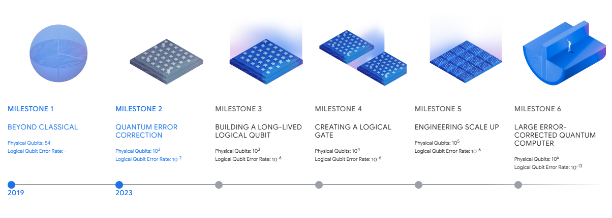

![]()
%%{init: {"theme": "neo", "look": "handDrawn"}}%%
flowchart TD
subgraph TIME["Time progression"]
T0["T0<br>Asset creation<br>Signature or encryption applied"]
T1["T1<br>Normal operation<br>Signatures verify<br>Data confidential"]
TQ["TQ<br>Quantum capability threshold<br>Shor executable at scale"]
T2["T2<br>Post-threshold exploitation<br>Forgery or decryption possible"]
end
subgraph ASSETS["Trusted assets"]
A1["Signed artifacts<br>Software<br>Firmware<br>Documents"]
A2["Encrypted data<br>Traffic<br>Archives<br>Backups"]
A3["Trust anchors<br>Root keys<br>Signing authorities"]
end
subgraph LOGIC["Verification logic"]
V["Verification rules<br>Binary and timeless<br>Valid signature → trust"]
end
subgraph HARDNESS["Cryptographic hardness"]
H0["Hardness holds<br>Classical infeasibility"]
H1["Hardness collapses<br>Private key derivation feasible"]
end
%% Temporal flow
T0 --> T1 --> TQ --> T2
%% Asset lifecycle
T0 --> A1
T0 --> A2
T0 --> A3
%% Verification logic remains unchanged
V --> T1
V --> T2
%% Hardness decay
H0 --> H1
H0 -. Applies during .-> T1
H1 -. Applies after .-> T2
%% Failure modes emerge only after threshold
T2 -->|Delayed decryption| A2
T2 -->|Delayed forgery| A1
T2 -->|Authority replacement| A3
%% Core asymmetry
V -. Unchanged .-> H1
When Digital Trust Expires: Quantum Computing and the Collapse of Signature-Based Security
How quantum attacks turn long-lived signatures into silent integrity and impersonation risks
cybersecurity
cryptography
enterprise risk management
essay
quantum computing
🇬🇧
Digital trust infrastructures are built on the implicit assumption that cryptographic hardness is permanent, while the systems and decisions that rely on it are designed to persist for decades. This assumption no longer holds. Advances in quantum computing do not cause visible system failure, but instead invalidate authenticity, integrity, and authority guarantees retroactively by rendering widely deployed signature schemes forgeable. Because signed artifacts, trust anchors, and encrypted data outlive their operational context, future quantum capability enables delayed forgery, silent impersonation, and retroactive supply-chain compromise at global scale. This article analyzes the structural mechanics of post-quantum trust expiration, distinguishes real present-day exposure from non-issues, and provides concrete technical and governance guidance to bound damage, preserve evidentiary value, and protect long-term knowledge and competitive advantage before cryptographic assumptions decay.
Keywords
post-quantum cryptography, quantum computing risk, digital signatures, cryptographic trust, delayed forgery, store now forge later, long-lived trust anchors, supply-chain security, cryptographic agility, quantum readiness, cybersecurity governance, enterprise risk management
Overview
Modern digital security relies on cryptographic primitives, i.e. mathematical constructions designed to provide confidentiality, integrity, authenticity, and non-repudiation. Public-key cryptography, and digital signatures in particular, form the backbone of trust across digital systems. Software and firmware updates are installed only if a signature verifies; TLS certificates bind domain names to public keys; secure boot validates code before execution; blockchain transactions authorize irreversible state changes; and financial, legal, and regulatory documents depend on digital signatures to assert authenticity and accountability.
In all these cases, trust is enforced in a strictly mathematical and binary manner. Systems do not reason about intent, provenance, or context. A signature either verifies under a public key or it does not. If verification succeeds, the artifact is treated as authentic, regardless of when it was created or under what future conditions it may be evaluated. The entire trust chain therefore rests on a single assumption: that the cryptographic primitive used to produce the signature remains unforgeable for as long as the signature is relied upon.
This assumption is no longer tenable in the presence of large-scale quantum computing.
Quantum algorithms, most notably Shor’s algorithm, are known to efficiently break the mathematical hardness assumptions underlying widely deployed public-key schemes such as RSA and elliptic-curve cryptography. Once a sufficiently capable quantum computer exists, private keys can be derived from public keys and digital signatures can be forged at will. This failure mode does not merely affect systems under the direct control of the original data owner. Encrypted and signed data are continuously replicated, cached, backed up, mirrored, logged, and archived across networks, cloud providers, service partners, regulators, and third-party platforms, often outside the visibility or control of the entity that originally produced or owned them. Cryptographic material therefore persists far beyond its operational context and beyond any single organization’s governance perimeter. Given the widespread and explicit assumption across industry, academia, and government that large-scale quantum computing will eventually materialize, this is no longer a speculative or hypothetical risk. It is a deterministic erosion of cryptographic guarantees over time, transforming today’s trusted data and signatures into latent liabilities whose compromise will occur wherever copies exist, not only where they were originally generated or intended to be trusted.
Critically, this risk does not require universal or ubiquitous quantum computing. Cryptographic trust fails asymmetrically: a single sufficiently capable adversary is enough to invalidate signatures that are verified globally. Once a public-key scheme is broken, the failure is not local to a system or organization but applies everywhere that scheme and key are trusted. Standard mitigation mechanisms such as revocation lists, key rotation, or software patching cannot retroactively repair past trust decisions, because verification logic has no temporal awareness of when cryptographic assumptions ceased to hold.
While much early discussion of post-quantum risk focused on delayed loss of confidentiality, the threat landscape is broader and more severe. Several distinct but related classes of quantum-enabled attacks must be considered:
- Store now, decrypt later attacks target confidentiality. Encrypted data captured today may be decrypted in the future once quantum capabilities mature, exposing historical communications, personal data, or intellectual property.
- Store now, forge later attacks target authenticity. Signed artifacts that are trusted today may become a basis for future forgery once signature schemes are broken, enabling attackers to create new artifacts that verify as legitimate under existing public keys.
- Key longevity abuse attacks exploit long-lived trust anchors such as root certificate authorities, firmware signing keys, and blockchain account keys. Even if original signatures remain intact, the continued trust in a public key becomes a standing authorization that can be abused once private key recovery becomes feasible.
- Supply-chain retroactive compromise arises when past trust decisions cannot be invalidated. Software updates, embedded firmware, or contractual artifacts that were accepted years earlier may become indistinguishable from malicious replacements, undermining auditability and forensic reconstruction.
All these threats share a common root cause: cryptographic verification is timeless, while cryptographic hardness is not. Verification logic does not degrade gracefully. It continues to accept signatures as valid even after the assumptions that once guaranteed their unforgeability have collapsed.
This article focuses on the authenticity and integrity dimension of post-quantum risk. It explains why signatures that are valid today can become the foundation for future impersonation and forgery, why this represents a structural threat to digital trust rather than a narrow cryptographic concern, and why organizations that rely on long-lived signed assets must treat post-quantum transition planning as a strategic cybersecurity imperative rather than a future technical upgrade.
A broader post-quantum threat landscape
Post-quantum risk does not manifest as a single failure mode. It emerges from a structural asymmetry at the heart of modern cryptography: verification mechanisms are timeless, while the hardness assumptions that justify them are not. Once this asymmetry is made explicit, multiple distinct but tightly related classes of quantum-enabled threats become visible.
%%{init: {"theme": "neo", "look": "handDrawn"}}%%
flowchart LR
A["Post-Quantum Threat Landscape<br/><br/>Cryptographic verification is timeless<br/>Cryptographic hardness is not"]
%% --- Delayed Decryption ---
A --> DD["Delayed Decryption of Stored Data<br/><i>Confidentiality failure</i>"]
DD --> DD1["Phase 1<br/>Encrypted data generated and stored<br/>TLS, VPNs, backups, archives"]
DD --> DD2["Phase 2<br/>Quantum capability emerges<br/>Key exchange becomes breakable"]
DD --> DD3["Phase 3<br/>Retroactive exposure<br/>Historical data decrypted"]
DD3 --> DDX["Impact<br/>Irreversible loss of secrecy<br/>Regulatory and contractual breach"]
%% --- Delayed Forgery ---
A --> DF["Delayed Forgery of Signed Artifacts<br/><i>Integrity and authenticity failure</i>"]
DF --> DF1["Phase 1<br/>Valid signatures created<br/>Software, documents, certificates"]
DF --> DF2["Phase 2<br/>Private keys derivable or signatures forgeable"]
DF --> DF3["Phase 3<br/>New forged artifacts verify as legitimate"]
DF3 --> DFX["Impact<br/>Silent impersonation<br/>Undetectable malicious actions"]
%% --- Trust Anchor Abuse ---
A --> TA["Abuse of Long-Lived Trust Anchors<br/><i>Systemic authority failure</i>"]
TA --> TA1["Phase 1<br/>Standing authorization deployed<br/>Root CAs, firmware keys, blockchain keys"]
TA --> TA2["Phase 2<br/>Quantum key compromise<br/>Public key becomes weapon"]
TA --> TA3["Phase 3<br/>Indefinite impersonation<br/>Authority replaced, not bypassed"]
TA3 --> TAX["Impact<br/>Governance collapse<br/>Supply-chain and identity subversion"]
%% --- Retroactive Supply Chain ---
A --> SC["Retroactive Supply-Chain Compromise<br/><i>Forensic and operational failure</i>"]
SC --> SC1["Phase 1<br/>Signed once, deployed for decades<br/>Firmware, ICS, embedded systems"]
SC --> SC2["Phase 2<br/>Cryptographically indistinguishability<br/>Legitimate vs forged unprovable"]
SC --> SC3["Phase 3<br/>Trust loss without recovery<br/>No reliable remediation"]
SC3 --> SCX["Impact<br/>Audit and incident response failure<br/>Physical replacement required"]
%% --- Structural Root ---
A --> R["Structural Root Cause<br/><br/>Verification logic never re-evaluates<br/>cryptographic assumptions"]
R --> RX["Strategic Consequence<br/>Trust decisions outlive mathematics<br/>Risk grows with inaction, not attacks"]
Delayed decryption of stored data
This class of attacks targets confidentiality.
An adversary passively collects encrypted data today, fully aware that it cannot be decrypted with classical computing resources. The strategy is purely temporal. Encrypted communications, databases, backups, and archives are retained until quantum computing enables efficient key recovery, at which point historical data becomes readable.
Key characteristics of this threat class include:
- No need for system compromise or active interference at the time of data capture.
- Damage materializes years later, often outside incident-response time horizons.
- Primary assets at risk are secrets: personal data, intellectual property, strategic communications.
This threat assumes that confidentiality requirements outlive the cryptographic lifetime of the algorithms used to enforce them, an assumption that is routinely true in regulated and knowledge-intensive domains.
Delayed forgery of signed artifacts
A second and more structurally dangerous class of attacks targets integrity and authenticity.
Here, the adversary observes or collects signed artifacts that are fully trusted today: software updates, certificates, transactions, documents, or control messages. Once quantum capabilities allow private key recovery or efficient signature forgery, the attacker can generate new artifacts that verify under the same public keys.
Unlike delayed decryption:
- The attacker is not limited to reading historical data.
- The attacker can actively inject forged artifacts into live systems.
- The failure mode is silent: verification succeeds, and systems behave as if the artifact were legitimate.
This class of attacks invalidates the assumption that a signature accepted today will remain unforgeable for the duration of its operational or legal relevance.
Abuse of long-lived trust anchors
A particularly critical manifestation of delayed forgery arises in systems built around long-lived signing keys and trust anchors, including:
- Root and intermediate certificate authorities.
- Firmware and secure-boot signing keys embedded in hardware.
- Software update signing infrastructures.
- Blockchain account keys and smart-contract authorities.
In these systems, the signature produced today is often not the primary target. Instead, the existence of a trusted public key functions as a standing authorization. Once the corresponding private key becomes forgeable, an attacker can issue new signatures that are indistinguishable from legitimate ones, even if the original owner of the key is offline, retired, or unaware.
This class of risk is especially severe because it:
- Enables full impersonation, not merely tampering.
- Undermines software supply chains and identity systems.
- Collapses trust retroactively without any change to verification logic.
A unified interpretation
These threat classes form a coherent risk landscape:
- Delayed decryption compromises secrecy.
- Delayed forgery compromises authenticity and integrity.
- Long-lived trust anchors turn cryptographic breakage into systemic impersonation.
All of them arise from the same root condition: cryptographic systems assume that mathematical hardness persists indefinitely, while quantum computing explicitly violates that assumption.
The strategic implication is unavoidable. Cryptography cannot be treated as static infrastructure. It must be managed as a time-bounded risk surface. Post-quantum transition planning is not only about protecting future data. It is about preserving the validity of past trust decisions and preventing today’s legitimate signatures from becoming tomorrow’s universal attack vectors.
Cryptographic fundamentals and the quantum breakpoint
Classical cryptography assumptions
Modern digital security is built on public key cryptography. Schemes such as RSA and elliptic curve cryptography rely on the assumed computational intractability of specific mathematical problems:
- RSA relies on the difficulty of factoring large composite integers.
- Elliptic curve schemes rely on the difficulty of solving discrete logarithm problems over elliptic curves.
These problems are not proven to be unsolvable. Their security rests on the empirical observation that no efficient classical algorithms are known to solve them at cryptographically relevant sizes. In other words, their hardness is an assumption grounded in current computational limits, not in mathematical impossibility.
In practice, these assumptions underpin a wide range of critical systems.
In web security, public key cryptography is used in TLS to authenticate servers and establish shared secrets. Browsers accept a connection as secure solely because a certificate signature verifies under a trusted public key. The confidentiality and authenticity of web traffic depend entirely on the infeasibility of recovering private keys or forging signatures.
In virtual private networks, public key cryptography is used to authenticate endpoints and establish secure channels between networks and users.
In electronic mail systems, schemes such as S/MIME and PGP use public keys to encrypt messages and establish trust between parties with no prior relationship.
In cloud platforms and identity infrastructures, RSA and elliptic curve keys authenticate users, services, and application interfaces, often through certificate chains and token signing systems.
In hardware security modules, smart cards, and embedded secure elements, these primitives protect cryptographic keys and enable authentication for payment systems, identity documents, and enterprise access control.
Across all these domains, confidentiality and authentication depend on a single assumption: that deriving a private key from a public key or solving the underlying mathematical problem is computationally infeasible for any realistic attacker using classical computing.
Digital signatures as a trust primitive
Digital signatures are the mechanism by which this mathematical hardness is operationalized into trust.
A digital signature is generated using a private key and verified using the corresponding public key. Successful verification establishes two properties:
- Integrity, meaning the signed data has not been altered.
- Authenticity, meaning the data originates from the holder of the private key.
There is no notion of intent, context, or temporal validity in this process. Verification is purely mathematical. If the signature verifies under the public key, the system treats the artifact as legitimate.
This primitive is embedded deeply and often invisibly into modern infrastructure.
Web browsers authenticate websites by verifying signatures on X.509 certificates. Operating systems install and execute software updates with elevated privileges only if a digital signature verifies. Secure boot mechanisms allow firmware and boot loaders to execute before the operating system only if their signatures are valid. Service-to-service authentication relies on signature based proofs of identity. Electronic document signing frameworks rely on signatures to guarantee integrity and non-repudiation over long legal time horizons. Blockchain systems define ownership and authorization entirely in terms of the ability to produce valid signatures.
In all these cases, the decision logic is binary and timeless. A signature either verifies or it does not. There is no built-in mechanism to reassess whether the cryptographic assumptions that made the signature meaningful at creation time still hold at verification time.
Long term trust assumptions
Cryptographic systems are therefore designed and deployed under the assumption that both confidentiality and authenticity must hold for long periods, often measured in decades.
This assumption is explicit in multiple standards, regulatory frameworks, and national cybersecurity strategies.
Guidance from NIST1 on post-quantum readiness recognizes that many systems must protect data and signatures for twenty to thirty years or longer, particularly in government, healthcare, finance, and critical infrastructure. Cryptographic choices are framed as lifecycle decisions whose consequences extend far beyond the moment of deployment.
1 See: National Institute of Standards and Technology. Migration to post-quantum cryptography: Quantum readiness—Cryptographic discovery (NIST Special Publication 1800-38B, Preliminary Draft, 2023). Website. URL
National cybersecurity authorities consistently warn that systems involving long-lived assets, embedded devices, and archival records face elevated risk from future cryptographic breaks, because such systems cannot be easily upgraded and must remain verifiable long after installation.
Legal and regulatory regimes assume long term verifiability by design. Digital contracts, electronic invoices, medical records, safety certifications, and audit logs are required to remain authentic and admissible for extended periods. Their validity depends not only on data retention, but on the continued trustworthiness of the cryptographic mechanisms used to protect integrity and authenticity at the time of creation.
Industrial and safety critical systems routinely operate on lifecycles spanning decades. Firmware, control logic, and configuration data may be signed once and relied upon for the operational lifetime of equipment, with the implicit expectation that authenticity guarantees remain intact throughout that period.
As a result, cryptographic risk cannot be evaluated solely in terms of present day attack feasibility. It must be evaluated against the full temporal horizon over which trust is required. This is the precise point at which quantum computing introduces a structural break. Once the hardness assumptions underlying widely deployed public key schemes no longer hold, trust does not degrade gradually. It collapses, everywhere, and without visible failure at the point of verification.
Quantum computing disruptive capability
Quantum computing introduces a computational model that is fundamentally different from classical digital computation. Classical computers operate on bits that take values in {0,1} and evaluate algorithms through deterministic or probabilistic sequences of Boolean operations. Quantum computers, by contrast, operate on qubits, which can exist in superpositions of basis states and become entangled, allowing joint quantum states that cannot be decomposed into independent classical variables.
This distinction is not merely architectural. It enables specific algorithmic constructions that exploit quantum interference to amplify correct computational paths and suppress incorrect ones. Importantly, this does not imply that quantum computers are faster at all tasks. Their advantage is highly problem-specific. For cryptography, however, two such problems coincide exactly with the mathematical foundations of modern public-key systems.
Quantum algorithms relevant to cryptography
Two quantum algorithms define the cryptographic threat model.
Shor’s algorithm provides a polynomial-time algorithm for integer factorization and discrete logarithm computation. These two problems are the precise hardness assumptions underlying RSA, Diffie-Hellman, and elliptic-curve cryptography. Under classical computation, the best known algorithms for these problems have sub-exponential but super-polynomial complexity, making them infeasible at cryptographically relevant sizes.
Shor’s algorithm fundamentally changes this landscape. It reduces both factorization and discrete logarithms to polynomial time, conditional only on the availability of a sufficiently large, fault-tolerant quantum computer. Once such a machine exists, the asymmetry between public and private keys collapses: private keys can be derived from public keys, and digital signatures can be forged deterministically rather than probabilistically.2
2 Resource estimates for Shor’s algorithm show that factoring a 2048-bit RSA key would require on the order of thousands of logical qubits and millions of physical qubits under realistic error-corrected architectures; recent work estimates that even with optimization, a machine with <1 million noisy qubits could break RSA-2048 within about a week. See: Gidney, C. (2025). How to factor 2048-bit RSA integers with less than a million noisy qubits. arXiv, 2505.15917. DOI
This is not a degradation of security margins. It is a categorical break. Increasing key sizes does not restore hardness once the algorithm is applicable. The underlying problem ceases to be computationally hard in principle.
Grover’s algorithm, by contrast, provides a quadratic speedup for unstructured search problems, including brute-force attacks against symmetric keys and hash preimages. This speedup weakens but does not invalidate symmetric cryptography. Its impact can be mitigated by doubling key sizes and hash output lengths. As a result, symmetric primitives do not face an existential quantum break in the same sense as public-key cryptography.
This asymmetry explains why post-quantum risk concentrates on signatures, key exchange, and authentication, rather than on bulk encryption.
Fault tolerance and the meaning of cryptographically relevant
The practical execution of Shor’s algorithm at cryptographic scale requires more than a small quantum processor. It requires fault-tolerant quantum computation, in which logical qubits are encoded across many physical qubits using quantum error-correcting codes.
Physical qubits are inherently noisy. Gate operations introduce errors, qubits decohere, and measurements are imperfect. To run deep quantum circuits such as those required for Shor’s algorithm, these errors must be actively detected and corrected. This introduces substantial overhead. A single logical qubit may require thousands of physical qubits, depending on error rates and code design.
A cryptographically relevant quantum computer is therefore defined not by headline qubit counts, but by the ability to sustain a sufficient number of logical qubits with low enough error rates to complete Shor’s algorithm before decoherence or accumulated error invalidates the computation.
This distinction is critical for interpreting claims about quantum progress.
Current state of quantum hardware
Today’s quantum computers operate in what is commonly referred to as the noisy intermediate-scale quantum regime. Existing systems demonstrate increasing control over tens to hundreds of physical qubits, along with improvements in gate fidelity and coherence times. They are capable of executing nontrivial quantum circuits and, in some cases, demonstrating quantum advantage on narrowly defined benchmark problems.
However, these systems are not capable of running Shor’s algorithm at cryptographic scale. Breaking RSA-2048 or widely used elliptic curves would require thousands of logical qubits and, under realistic error-correction assumptions, millions of physical qubits.
Public roadmaps from major vendors reflect this reality. Google’s recent processors emphasize improvements in qubit quality and circuit depth but remain far from fault-tolerant operation at cryptographic scale. IBM’s roadmap similarly focuses on modular architectures, error mitigation, and incremental scaling as prerequisites for logical qubit stability later in the decade.
At the same time, progress is concrete and measurable. Improvements in qubit fidelity, surface code efficiency, magic-state distillation, and architectural design have steadily reduced the estimated resource requirements for large-scale quantum algorithms. Each such improvement shortens the gap between theoretical feasibility and engineering realization.
Recent resource estimates show that factoring a 2048-bit RSA modulus may be achievable with fewer than one million physical qubits under optimistic but plausible assumptions, with runtimes on the order of days rather than years.
Interpreting timelines and Q-Day
From a research perspective, the central uncertainty is temporal, not conceptual. There is no known classical algorithmic breakthrough that threatens RSA or elliptic-curve cryptography, and there is no known theoretical barrier that would prevent Shor’s algorithm from being executed on a sufficiently capable quantum computer.
The disagreement among experts concerns when, not whether, cryptographically relevant quantum computing will become practical. Estimates vary from optimistic projections in the early 2030s to more conservative timelines extending into the 2040s or beyond. What matters for security planning is that these timelines fall well within the operational and legal lifetimes of many digital systems deployed today.
This creates a structural mismatch. Cryptographic systems are deployed under the assumption that trust decisions made today will remain valid for decades. Quantum computing introduces a breakpoint at which those assumptions fail globally and abruptly. Once Shor’s algorithm can be executed at scale, signatures do not gradually lose strength. They become forgeable everywhere, immediately, and without signaling failure at the point of verification.
This is why the concept often referred to as Q-Day is not a single dramatic event but a threshold crossing. The moment an adversary possesses sufficient quantum capability, all public-key-based trust anchored in vulnerable algorithms becomes suspect simultaneously.
From a defensive perspective, the absence of near-term cryptographic breakage is not reassuring. It is precisely what creates the window in which long-lived data, signatures, and trust anchors are being generated today under assumptions that will not hold for their full lifetime.
This dual reality, steady progress toward fault-tolerant quantum computing and the continued reliance on vulnerable public-key systems, defines the current status quo. It is the reason post-quantum transition planning is a present responsibility, not a future reaction.
Where we are today: hardware reality versus cryptographic thresholds
At present, quantum computing remains in a pre-threshold regime. This means that existing devices do not yet implement fault-tolerant error correction across a sufficient number of qubits to execute Shor’s algorithm at scales capable of breaking RSA-2048 or widely deployed elliptic-curve systems.
This distinction is critical. The limiting factor is not the existence of quantum processors per se, but the absence of stable logical qubits that can sustain deep quantum circuits with acceptably low error rates. Without full fault tolerance, the probability of accumulated errors grows exponentially with circuit depth, making large-scale cryptanalytic algorithms infeasible.
Current quantum processors therefore operate in what is commonly referred to as the noisy intermediate-scale quantum (NISQ) regime. These systems are characterized by:
- Tens to hundreds of physical qubits.
- Limited coherence times.
- Gate and measurement error rates that require shallow circuits.
- No end-to-end error correction capable of supporting long computations.
Within this regime, quantum computers are useful for experimental validation, benchmarking, and narrowly defined algorithmic demonstrations, but not for large-scale cryptanalysis.
Public roadmaps and experimental reality
Recent quantum processors from Google, for example, demonstrate increasingly complex quantum operations involving on the order of hundreds of physical qubits. These systems are capable of executing sophisticated circuits and, in some cases, demonstrating quantum advantage on carefully chosen tasks. However, they remain far short of the qubit counts and error-corrected logical depth required to run Shor’s algorithm at cryptographically relevant sizes. As a result, they do not pose a direct threat to modern cryptographic systems in their current form.
Google’s own roadmap3 reflects this gap, emphasizing incremental improvements in qubit quality, error rates, and architectural design as prerequisites for scalable fault-tolerant computation rather than claiming near-term cryptanalytic capability.

Similarly, IBM has publicly articulated a roadmap4 toward fault-tolerant quantum computing, with milestones extending into the late 2020s. This roadmap focuses on modular architectures, improved error correction, and gradual scaling toward logical qubits. While ambitious, it explicitly acknowledges that substantial engineering challenges remain before cryptographically relevant algorithms become executable.
4 See: The IBM Quantum roadmap

In both cases, vendor roadmaps do not suggest that RSA-2048 or elliptic-curve cryptography are imminently breakable. They do, however, demonstrate that fault tolerance is treated as an engineering problem being actively worked, not as a theoretical impossibility.
Measured progress and shrinking resource estimates
Although current systems are far from the cryptographic threshold, progress is both real and measurable. Over the past decade, improvements in qubit fidelity, coherence times, surface-code efficiency, magic-state distillation, and architectural design have steadily reduced the estimated resources required for large-scale quantum algorithms.
This progress matters because cryptographic risk is governed by resource thresholds, not by qualitative milestones. Each reduction in error rates or overhead translates directly into fewer physical qubits and shorter runtimes for algorithms such as Shor’s.
Recent work, including the resource estimates by Gidney, shows that factoring a 2048-bit RSA modulus may be achievable with fewer than one million noisy physical qubits under optimistic but technically grounded assumptions, with runtimes measured in days rather than months or years. This does not imply that such machines exist today, but it materially tightens the bounds on what cryptographically relevant means in engineering terms.
Interpreting expert assessments
Leading theorists such as Scott Aaronson have repeatedly emphasized the magnitude of the gap between current quantum machines and those required for cryptographic breakage. Demonstrations of quantum advantage on specific benchmarks do not imply that cryptanalysis is near. Executing Shor’s algorithm at scale requires thousands of logical qubits, sustained over long computations, with full error correction. Current systems are orders of magnitude away from this regime.
At the same time, Aaronson and others have been explicit that dismissing long-term risk entirely is unjustified. The trajectory of research, combined with historical patterns of exponential improvement in controlled physical systems, places cryptographically relevant quantum computing within the scope of strategic planning over the next one to two decades. The debate is not about whether such a capability is possible in principle, but about the timing of its realization.
Structural implications for cryptographic planning
The central issue is structural rather than predictive. Contemporary cryptographic systems are deployed under an implicit assumption: that certain mathematical problems remain permanently out of reach for adversaries. Public-key cryptography embeds this assumption deeply into software, hardware, legal frameworks, and operational processes. Shor’s algorithm provably invalidates that assumption once fault-tolerant quantum computing reaches sufficient scale.
The exact timing of this threshold remains uncertain. It may be crossed in 2030, 2035, or later. What is not uncertain is the mode of failure once it is crossed. The break is global, immediate, and silent. Digital signatures do not degrade gradually or emit warning signals. The same verification logic that accepted a signature yesterday will accept a forged one tomorrow, without distinction. From the system’s perspective, nothing appears to have changed.
This creates the defining tension of the current status quo. Cryptographically vulnerable systems continue to be designed, deployed, and relied upon today, while the engineering path toward breaking their underlying assumptions is steadily being shortened. The absence of present-day cryptanalytic capability is therefore not a source of reassurance. It is the enabling condition for the accumulation of long-lived data, signatures, certificates, firmware images, and trust anchors that will remain exposed once the quantum threshold is crossed.
Scott Aaronson has captured this asymmetry with an instructive analogy: knowing how to build a nuclear weapon is not itself catastrophic; the catastrophe occurs once enough fissile material exists. The danger lies not in the abstract feasibility, but in the accumulation of the critical resource. In the quantum context, Shor’s algorithm is the design, and fault-tolerant quantum hardware is the fissile material. The question is not whether the design works in principle, but when enough computational material exists to make the attack executable in practice. Until that point, systems appear safe. Once it is reached, the transition is abrupt and irreversible.
This analogy clarifies why traditional security intuition fails. In most cybersecurity domains, risk grows with observable attacker activity. In the post-quantum case, risk grows with defender inaction and with the continued production of assets whose validity is assumed to extend beyond the lifetime of their cryptographic foundations.
The combination of measurable progress in quantum engineering and the continued absence of classical cryptanalytic breakthroughs is therefore not contradictory. It is precisely why standards bodies, national cybersecurity agencies, and cryptographic researchers treat quantum attacks on public-key cryptography as a credible future risk requiring proactive mitigation. Waiting for visible breakage is not a viable strategy, because by the time breakage is observable, the trust failure is already complete and cannot be undone.
How post-quantum threats unfold in practice
The post-quantum threat landscape described above is not abstract. Each class of risk follows a concrete and technically well-defined mechanism that unfolds over time. The critical feature shared by all of them is temporal decoupling: assets are created and trusted today under assumptions that fail later, without any change in verification logic or observable system behavior.
The sections below describe how each threat class materializes, step by step, once quantum capability crosses the cryptographic threshold.
Delayed decryption of stored data
Phase 1: data generation and passive collection
Organizations generate and exchange large volumes of encrypted data using public-key cryptography for key exchange and symmetric encryption for bulk data protection. This includes:
- TLS-protected web traffic.
- VPN communications.
- Encrypted email and messaging.
- Encrypted databases, backups, and archives.
- Long-term storage of sensitive personal, financial, or proprietary data.
Adversaries do not need to interfere with these systems. They only need to capture encrypted ciphertext, which is often feasible through network interception, compromised endpoints, lawful interception in some jurisdictions, or access to cloud storage and backups.
At this stage, the data remains confidential under classical cryptographic assumptions.
Phase 2: cryptographic capability shift
Once quantum computing reaches cryptographically relevant scale, public-key schemes used for key exchange and key encapsulation become vulnerable. Shor’s algorithm enables efficient recovery of private keys or session secrets associated with captured ciphertext.
The crucial point is that the data does not need to be re-transmitted. The adversary operates entirely on stored material.
Phase 3: Retroactive exposure
Historical data is decrypted long after its creation. The damage manifests as a delayed breach:
- Past communications become readable.
- Historical databases and archives are exposed.
- Regulatory, contractual, and privacy guarantees are violated retroactively.
The exposure is irreversible. No key rotation or patching can restore confidentiality once plaintext is recovered.
Delayed forgery of signed artifacts
Phase 1: signature creation and trust establishment
Organizations continuously produce digitally signed artifacts that are trusted implicitly by systems and institutions, including:
- Software binaries and update packages.
- Firmware images and secure-boot components.
- X.509 certificates and certificate chains.
- Signed documents, contracts, and regulatory submissions.
- Blockchain transactions and state transitions.
These artifacts are valid and trustworthy at creation time. Verification mechanisms confirm their authenticity and embed them into operational workflows, legal records, and automated decision systems.
Copies of these artifacts proliferate across systems, backups, mirrors, registries, and third-party platforms.
Phase 2: cryptographic capability shift
Once Shor’s algorithm becomes executable at scale, the hardness assumptions underlying RSA and elliptic-curve signatures collapse. Private signing keys can be derived from public keys, or equivalent signatures can be forged directly.
This transition does not require access to original systems or signing infrastructure. Public keys are sufficient.
Phase 3: active forgery and impersonation
Armed with the ability to forge signatures, an adversary can create new artifacts that verify under existing trusted keys:
- Malicious software updates appear legitimately signed.
- Firmware images pass secure-boot verification.
- Certificates assert false identities.
- Signed documents and records are fabricated.
- Blockchain transactions authorize unauthorized transfers.
From the perspective of the verifying system, nothing is anomalous. The cryptographic verification equation holds. The failure is silent and systemic.
This is the defining feature of post-quantum authenticity failure: trust collapses without detection.
Abuse of long-lived trust anchors
Phase 2: key compromise through quantum capability
Once private keys become derivable through quantum computation, the attacker does not need historical signatures. The key itself becomes the weapon.
Phase 3: systemic impersonation
With control over a trust anchor, an adversary can:
- Impersonate vendors or authorities indefinitely.
- Issue valid certificates or updates at will.
- Subvert identity, authentication, and governance systems.
- Undermine entire supply chains.
This class of failure is particularly severe because it does not target isolated artifacts. It replaces legitimate authority with malicious authority, while preserving all cryptographic checks.
Retroactive supply-chain compromise
Phase 1: long-term reliance on signed components
Industrial systems, embedded devices, and critical infrastructure often rely on firmware and software that is:
- Signed once.
- Deployed for decades.
- Rarely updated or physically inaccessible.
Trust decisions made at deployment time are assumed to remain valid for the lifetime of the system.
Phase 2: post-quantum indistinguishability
Once signature schemes are broken, there is no cryptographic method to distinguish:
- Legitimate historical firmware from
- Forged replacements signed with compromised keys
Audit trails, version histories, and provenance records lose their evidentiary value.
Phase 3: irrecoverable trust loss
Incident response and forensic reconstruction become unreliable. Operators can no longer prove which code was legitimate and which was malicious. In safety-critical environments, the only reliable remediation may be physical replacement, not software updates.
From cryptographic failure to structural remediation
Across all threat classes, the failure mode is the same:
- Verification logic remains unchanged.
- Artifacts continue to verify successfully.
- Systems behave exactly as designed.
The difference lies not in attacker behavior, but in the expiration of cryptographic assumptions.
This is why post-quantum threats cannot be managed using conventional breach-response models. There is no intrusion to detect, no anomaly to flag, and no moment at which the system signals loss of trust. The failure is embedded in the mathematics and becomes exploitable the moment adversary capability crosses the required threshold.
For this reason, post-quantum risk is not about reacting to attacks. It is about anticipating the expiration of trust mechanisms and migrating away from assumptions that are known, in principle, to fail.
At this point, it becomes possible to describe post-quantum remediation not as an algorithmic upgrade, but as a structural intervention on exposure, authority, and irreversibility. The following diagram summarizes how each threat class connects to specific upstream and downstream controls, framing remediation as a structural containment problem rather than a cryptographic fix.
%%{init: {"theme": "neo", "look": "handDrawn"}}%%
flowchart TD
R["Structural root cause<br><br>Timeless verification<br>vs<br>time-bounded hardness"]
PRE["Upstream controls<br><br>Exposure & accumulation"]
TH["Threat classes<br><br>Post-quantum failure modes"]
POST["Downstream controls<br><br>Containment & recovery"]
R -->|Creates latent risk| PRE
R -->|Enables failure modes| TH
PRE -->|Shapes likelihood and scale| TH
TH -->|Triggers damage control| POST
%%{init: {"theme": "neo", "look": "handDrawn"}}%%
flowchart LR
subgraph PRE["Upstream controls"]
INV["Inventory & discovery"]
AGI["Cryptographic agility"]
HYB["Hybrid / post-quantum<br>key establishment"]
DRET["Data minimization<br>& retention policy"]
end
subgraph THREATS["Threat classes"]
DD["Delayed decryption"]
DF["Delayed forgery"]
TA["Trust anchor abuse"]
SC["Retroactive supply-chain compromise"]
end
INV -->|Enables identification and prioritization| DD
INV -->|Reveals long-lived signing authority| DF
INV -->|Exposes standing authorizations| TA
INV -->|Maps unpatchable components| SC
AGI -->|Allows key exchange migration| DD
AGI -->|Allows signature scheme replacement| DF
AGI -->|Allows re-anchoring of trust roots| TA
AGI -->|Allows supply-chain refresh| SC
HYB -->|Reduces future decryptability| DD
DRET -->|Limits stored ciphertext available| DD
%%{init: {"theme": "neo", "look": "handDrawn"}}%%
flowchart LR
subgraph THREATS["Threat classes"]
DD["Delayed decryption"]
DF["Delayed forgery"]
TA["Trust anchor abuse"]
SC["Retroactive supply-chain compromise"]
end
subgraph POST["Downstream controls"]
DRET["Retention enforcement<br>& data disposal"]
LIF["Shorten validity<br>& scoped authority"]
PKI["PKI hardening<br>& lifetime limits"]
SEG["Segment trust domains"]
ARCH["Architectural containment"]
PROV["Non-cryptographic provenance"]
EV["Evidentiary planning"]
GOV["Governance & ownership"]
end
DD -->|Limits value of recovered plaintext| DRET
DD -->|Prepares regulatory and legal response| EV
DF -->|Limits duration of forged authority| LIF
DF -->|Prevents cross-domain impersonation| SEG
DF -->|Adds non-cryptographic checks| ARCH
DF -->|Assigns accountability for signatures| GOV
TA -->|Bounds authority of trust roots| PKI
TA -->|Prevents systemic impersonation| SEG
TA -->|Contains blast radius of compromise| ARCH
TA -->|Defines ownership and liability| GOV
SC -->|Preserves historical evidence| PROV
SC -->|Maintains operability under ambiguity| ARCH
SC -->|Supports forensic and legal response| EV
SC -->|Enables trust re-anchoring| PKI
SC -->|Coordinates cross-domain response| GOV
Organizational ownership of post-quantum risk
Post-quantum risk is not a narrow cryptographic problem. It is a cross-cutting trust failure that spans technology, governance, legal accountability, and long-term asset management. As a result, it cannot be owned or mitigated by a single technical function in isolation.
In most organizations, responsibility for cryptography is implicitly fragmented:
- Security teams own incident response and key management.
- IT and platform teams own infrastructure and lifecycle upgrades.
- Legal and compliance functions own evidentiary validity and regulatory exposure.
- Product and operations teams own long-lived systems, firmware, and customer-facing guarantees.
This fragmentation becomes a structural liability in the post-quantum context. The risk does not manifest as a discrete breach, misconfiguration, or vulnerability that can be escalated and patched. It manifests as a loss of trust guarantees over time, often long after the original system owners, contracts, or architectures have changed.
For this reason, post-quantum risk must be treated as a program-level responsibility with explicit ownership and escalation paths.
At an organizational level:
- The Board and executive leadership own the risk in fiduciary terms, because post-quantum failures affect long-term liability, regulatory exposure, and the enforceability of trust-based commitments.
- The CISO or equivalent security executive should own the post-quantum risk program operationally, because the risk ultimately materializes through cryptographic controls, key management, and trust infrastructure.
- Legal, compliance, and risk management functions must be formally involved, because cryptographic breakage undermines non-repudiation, evidentiary integrity, and contractual assumptions.
- Technology and product leadership must participate where long-lived systems, embedded devices, or signed artifacts are designed to persist beyond current cryptographic lifetimes.
Critically, this risk cannot be delegated to vendors, standards bodies, or future migrations alone. While standards and tooling are necessary enablers, they do not define which assets require long-term trust, which signatures carry legal or operational authority, or which failures would be existential rather than tolerable.
Without explicit ownership, post-quantum risk defaults to a future problem. With explicit ownership, it becomes a managed degradation of trust, bounded in scope, time, and impact.
Post-quantum security is not achieved by a cryptographic upgrade. It is achieved by assigning accountability for how long trust must last, and ensuring that cryptographic mechanisms are not asked to provide guarantees they cannot, in principle, sustain.
Reducing damage from delayed decryption of stored data
As shown in Figure 6, delayed decryption risk is shaped almost entirely by upstream decisions. Data retention, exposure of encrypted traffic, and key establishment mechanisms determine whether future quantum capability results in trivial mass disclosure or limited, low value recovery.
Delayed decryption attacks cannot be fully prevented once encrypted data has been captured and quantum-vulnerable key exchange has been used. The only viable strategy is therefore damage minimization: reducing the value, scope, and legal impact of any data that becomes readable in the future.
This section provides practical guidance for organizations to reduce the consequences of delayed decryption, starting today.
1. Minimize the cryptographic blast radius
The most effective damage control measure is to reduce how much sensitive information exists in encrypted form at any given time.
Organizations should:
- Actively identify data whose confidentiality requirements extend beyond the plausible Q-Day window.
- Avoid encrypting long-lived sensitive data using quantum-vulnerable key exchange mechanisms where alternatives exist.
- Apply strict data classification and ensure that only data requiring long-term secrecy is retained.
This is not a cryptographic exercise alone. It is a data governance decision. Data that is never collected, or is deleted early, cannot be decrypted later.
Key principle: retention equals exposure.
2. Shorten data lifetimes aggressively
This control directly reduces the effective attack surface shown in Figure 6 by shrinking the volume of ciphertext that survives until the quantum threshold is crossed. Delayed decryption is only damaging if the decrypted data still exists.
Organizations should:
- Enforce retention limits based on confidentiality lifetime, not operational convenience.
- Automatically delete or irreversibly anonymize data once its business purpose expires.
- Apply differentiated retention for raw data versus derived or aggregated data.
For example:
- Raw telemetry, logs, or transactional traces should have significantly shorter retention periods than aggregated statistics.
- Full communication transcripts should not be retained when metadata or summaries suffice.
Deletion policies must apply equally to:
- Primary systems
- Backups
- Replicated cloud storage
- Disaster recovery environments
If encrypted backups are kept indefinitely, delayed decryption remains fully exploitable.
3. Reduce sensitivity through irreversible transformation
Where deletion is not possible, irreversible transformation reduces future damage.
Techniques include:
- Tokenization with one-way mapping.
- Irreversible hashing of identifiers.
- Strong anonymization and aggregation.
- Separation of identifying data from content, stored under different protection regimes.
The objective is that future plaintext reveals minimal actionable information, even if encryption fails.
This is especially relevant for:
- Analytics datasets.
- Machine learning training data.
- Regulatory archives.
If decrypted data cannot be linked back to individuals, accounts, or assets, its harm potential is drastically reduced.
4. Isolate long-term secrets from quantum-vulnerable key exchange
Hybrid and post-quantum key establishment act only on the left side of the causal chain in Figure 6. They do not restore secrecy retroactively, but they prevent future ciphertext from entering the delayed decryption pipeline. Many systems encrypt data using symmetric algorithms whose security remains acceptable under quantum attack, but rely on public-key cryptography for key exchange.
Organizations should:
- Transition long-term data protection workflows to hybrid or post-quantum-ready key establishment where feasible.
- Ensure that data encryption keys are not recoverable solely through quantum attacks on key exchange protocols.
- Prefer architectures where long-term secrets are derived from locally generated entropy rather than externally negotiated keys.
While full post-quantum migration may not yet be complete, hybrid key exchange already reduces exposure by ensuring that at least one hardness assumption survives.
5. Treat encrypted archives as future breach material
Organizations must abandon the assumption that encrypted archives are safe by default.
Practically, this means:
- Modeling encrypted archives as potential future breach datasets.
- Including them in impact assessments, regulatory planning, and incident simulations.
- Documenting which encryption mechanisms were used and when.
From a governance perspective, this enables:
- More accurate regulatory disclosures if delayed decryption occurs.
- Defensible decision-making around retention and deletion.
- Alignment with emerging supervisory expectations around post-quantum preparedness.
6. Align legal, compliance, and security timelines
Delayed decryption creates a mismatch between cryptographic time and legal time.
Organizations should:
- Map confidentiality obligations to realistic cryptographic lifetimes.
- Avoid contractual or policy commitments that assume perpetual secrecy when cryptography cannot provide it.
- Update risk disclosures and data protection impact assessments accordingly.
This is particularly relevant for:
- GDPR and data protection regimes.
- Trade secret protection.
- Financial and healthcare regulations.
- Cross-border data transfers.
Reducing future damage requires aligning legal promises with technical reality.
7. Prepare for irreversibility
Finally, organizations must internalize a key structural fact: delayed decryption damage cannot be remediated after the fact.
There is no incident response, no key rotation, and no patch that can undo exposure once plaintext exists. The only effective controls are those applied before quantum capability arrives.
For delayed decryption threats, preparedness is not about faster reaction. It is about making future compromise uninteresting, incomplete, and legally manageable.
Summary for decision makers
- Delayed decryption is a certainty for data protected by vulnerable cryptography and retained long enough.
- The objective is not prevention, but damage minimization.
- Data minimization, short retention, irreversible transformation, and hybrid cryptography are the primary levers.
- Every encrypted archive is a future plaintext dataset unless proven otherwise.
Reducing damage today is the only way to remain in control tomorrow.
Reducing damage from delayed forgery of signed artifacts
Figure 7 illustrates why delayed forgery cannot be mitigated through cryptography alone. Once signatures become forgeable, damage depends on how long authority persists and how broadly it applies, not on detection or key rotation.
Unlike delayed decryption, delayed forgery does not primarily expose past information. It enables future impersonation under historical trust. Once vulnerable signature schemes are broken, authenticity failures cannot be detected cryptographically and cannot be remediated retroactively. The objective is therefore to constrain the authority, scope, and lifetime of what a signature can authorize, so that future forgery has limited operational and legal impact.
This section focuses on reducing blast radius and persistence of trust, not on eliminating the underlying cryptographic risk already described.
1. Shorten the validity of signatures and trust assertions
In Figure 7, shortened validity directly limits the operational window of forged authority, transforming delayed forgery from a systemic risk into a bounded incident. The most effective control against delayed forgery is temporal limitation.
Organizations should:
- Minimize validity periods for certificates, signatures, and signed assertions.
- Avoid signatures that imply indefinite or multi-decade trust.
- Prefer short-lived certificates, tokens, and signing authorizations wherever operationally possible.
A forged signature is only damaging while it is accepted. Reducing validity windows directly limits how long a forged artifact can be exploited.
This principle applies to:
- TLS certificates.
- Code-signing certificates.
- API tokens and assertions.
- Regulatory or compliance signatures.
Long-lived signatures convert a future cryptographic break into a persistent impersonation capability.
3. Decouple trust from cryptography alone
As established in earlier sections, cryptographic verification is binary and timeless. Damage reduction requires additional trust signals that are not reducible to a single signature check.
Organizations should:
- Combine signatures with contextual verification such as:
- Hardware attestation.
- Secure boot measurement chains.
- Runtime integrity checks.
- Environmental or behavioral validation.
- Avoid architectures where signature verification is the sole gatekeeper for high-impact actions.
When cryptographic trust collapses, secondary controls become the only remaining discriminators.
6. Limit reliance on irrevocable trust anchors
As discussed in the long-lived trust anchor section, roots of trust are high-impact failure points.
Damage reduction measures include:
- Minimizing the number of systems that depend on a given root key.
- Avoiding single global trust anchors where possible.
- Designing revocation and replacement mechanisms that assume cryptographic breakage, not just key theft.
Even if cryptographic revocation cannot restore authenticity, architectural compartmentalization limits systemic collapse.
7. Prepare for evidentiary ambiguity
Delayed forgery undermines the ability to prove authenticity after the fact.
Organizations should:
- Accept that cryptographic signatures alone may not be sufficient evidence in the post-quantum era.
- Preserve auxiliary evidence such as:
- Time-stamped logs.
- Independent attestations.
- Out-of-band confirmations.
- Avoid processes where a signature is the sole admissible proof of legitimacy.
This reduces legal, regulatory, and forensic damage when authenticity is disputed.
8. Align governance, contracts, and liability with cryptographic reality
Finally, delayed forgery has governance implications that technical controls alone cannot solve.
Organizations should:
- Avoid contractual language that assumes perpetual non-repudiation from vulnerable signature schemes.
- Update risk disclosures to reflect the finite lifetime of cryptographic authenticity.
- Clarify liability boundaries where future signature forgery is technically plausible.
As with delayed decryption, the goal is not to deny the threat, but to ensure that its eventual materialization does not create unbounded legal or operational exposure.
Summary for decision makers
- Delayed forgery enables undetectable impersonation, not just data exposure.
- Damage reduction depends on limiting how long and how much a signature authorizes.
- Short validity, scoped authority, and layered trust controls are the primary levers.
- Cryptographic authenticity must be treated as time-bounded, even if verification logic is not.
Once signature schemes fail, trust does not erode. It disappears. Damage reduction today determines whether that disappearance is survivable or catastrophic.
Reducing damage from abuse of long-lived trust anchors
As shown in Figure 7, trust anchor abuse is the only post-quantum threat class where cryptographic failure directly replaces governance rather than bypassing it. Mitigation therefore depends on architectural partitioning and authority limits, not algorithm strength.
Abuse of long-lived trust anchors represents the most severe post-quantum failure mode. Unlike delayed decryption or isolated forgery, compromise of a trust anchor replaces legitimate authority with adversarial authority, while leaving all verification mechanisms intact. Once this occurs, cryptography ceases to function as a control layer.
Damage reduction therefore requires architectural containment, not cryptographic hardening. The objective is to ensure that no single key, certificate, or authority can retain unbounded power across time, systems, or organizations.
3. Separate manufacturing trust from operational trust
Many trust anchors are embedded at manufacture time and assumed to remain authoritative for the lifetime of hardware or software.
Organizations should:
- Distinguish bootstrap trust from ongoing operational trust.
- Require re-authorization or re-attestation after deployment.
- Avoid designs where a manufacturing key can indefinitely authorize updates or control.
This is particularly critical for:
- Embedded devices.
- Industrial control systems.
- IoT and OT environments.
Manufacturing trust should enable initialization, not permanent governance.
6. Introduce layered trust and cross-checks
A single trust anchor should never be sufficient for high-impact actions.
Damage reduction measures include:
- Requiring multiple independent attestations for critical operations.
- Combining cryptographic trust with:
- Hardware measurements.
- Runtime integrity checks.
- Operational approval workflows.
When cryptographic trust collapses, layered controls become the only remaining barrier.
7. Assume forensic ambiguity and plan accordingly
Once a trust anchor is compromised, it becomes impossible to distinguish legitimate actions from forged ones using cryptographic evidence alone.
Organizations should:
- Accept that historical authenticity may become unprovable.
- Preserve auxiliary records and independent logs.
- Avoid sole reliance on signature validity for auditability or compliance.
This reduces regulatory and legal exposure when trust anchors are disputed.
8. Align contracts and liability with finite trust
Finally, trust anchor abuse has implications beyond technology.
Organizations should:
- Avoid contractual commitments that assume perpetual cryptographic authority.
- Explicitly acknowledge cryptographic sunset risks in supplier and vendor agreements.
- Define liability boundaries for failures arising from future cryptographic breakage.
This prevents a technical inevitability from becoming an unlimited legal or fiduciary failure.
Summary for decision makers
- Long-lived trust anchors turn quantum capability into systemic impersonation.
- Damage reduction depends on eliminating perpetual authority and centralization.
- Trust must be partitioned, time-bounded, and layered.
- Once a trust anchor is abused, cryptography cannot distinguish legitimate from malicious authority.
If delayed decryption exposes data, and delayed forgery enables impersonation, abuse of trust anchors replaces governance itself. Damage reduction today determines whether that replacement is survivable or existential.
Reducing damage from retroactive supply-chain compromise
Figure 7 highlights why retroactive supply-chain compromise cannot be fully remediated once cryptographic provenance fails. Controls in this section focus on recoverability and operational continuity rather than proof of authenticity.
Retroactive supply-chain compromise is the most operationally disruptive post-quantum failure mode. It does not merely enable future attacks; it invalidates the ability to reason about the past. Once signature schemes fail, systems lose the ability to distinguish legitimate historical components from forged replacements, and forensic certainty collapses.
Damage reduction in this context requires designing systems that remain recoverable even when cryptographic provenance becomes unreliable.
1. Minimize reliance on signed once, trusted forever components
The first mitigation is architectural.
Organizations should:
- Avoid designs where firmware or control logic is expected to remain valid for decades without revalidation.
- Prefer components that can be periodically re-attested or refreshed.
- Treat long-lived signed artifacts as provisional, not permanent.
Where physical constraints prevent updates, systems should be classified explicitly as high-impact post-quantum exposure zones.
2. Preserve non-cryptographic provenance signals
This measure exists precisely because cryptographic verification becomes non-informative post threshold, as illustrated in Figure 7. Independent provenance signals provide context when signatures no longer convey truth. Once cryptographic signatures become forgeable, cryptography alone cannot establish historical truth.
Organizations should:
- Preserve independent provenance signals such as:
- Manufacturing records.
- Physical serial numbers.
- Deployment logs.
- Chain-of-custody documentation.
- Maintain these records outside the same trust domain as the cryptographic system they describe.
While these signals are not cryptographically strong, they provide contextual evidence that survives cryptographic collapse.
3. Segment supply chains by criticality and replaceability
Not all components deserve equal protection.
Organizations should:
- Classify supply-chain components by:
- Safety impact.
- Operational criticality.
- Replaceability.
- Apply stricter architectural controls and redundancy to components whose compromise would require physical replacement.
This enables targeted investment rather than uniform hardening.
4. Design for graceful degradation rather than binary trust
Supply-chain trust should not be all-or-nothing.
Damage can be reduced by:
- Designing systems that enter degraded or restricted modes when trust is uncertain.
- Avoiding architectures where loss of firmware authenticity implies total loss of control.
- Enabling manual or supervisory override paths for safety-critical operations.
This prevents cryptographic failure from immediately becoming operational failure.
5. Separate safety enforcement from update authenticity
In many industrial systems, safety logic and update mechanisms are intertwined.
Organizations should:
- Ensure that safety interlocks and physical protections do not depend solely on firmware authenticity.
- Design safety mechanisms that remain effective even if control software authenticity is disputed.
- Treat cryptographic integrity as an enhancement, not the sole safety barrier.
This limits physical harm even when trust collapses.
6. Maintain the ability to re-anchor trust post-deployment
Systems should be designed to allow re-establishment of trust, even if original signatures become meaningless.
This may include:
- Secure re-provisioning mechanisms.
- Physical maintenance interfaces.
- Human-verified re-initialization procedures.
If trust cannot be re-anchored, the system is effectively unmaintainable in a post-quantum world.
7. Plan for evidentiary failure in incident response
Organizations must accept that, post-quantum, forensic certainty may be unattainable.
Damage reduction includes:
- Adjusting incident response plans to account for ambiguous provenance.
- Avoiding over-reliance on cryptographic proof in regulatory or legal defenses.
- Preparing documentation that explains why certainty cannot be restored.
This reduces legal and regulatory shock when traditional evidence fails.
8. Incorporate physical replacement into lifecycle planning
Finally, some systems cannot be made cryptographically resilient.
Organizations should:
- Explicitly plan for physical replacement as a last-resort remediation.
- Include replacement timelines and costs in lifecycle and risk planning.
- Avoid treating physical replacement as an unthinkable failure.
In some cases, physical intervention is the only trustworthy recovery path once cryptographic assumptions expire.
Summary for decision makers
- Retroactive supply-chain compromise destroys the ability to prove what is genuine.
- Cryptographic signatures cannot be relied upon indefinitely for historical truth.
- Damage reduction depends on architectural recoverability, not stronger signatures.
- Systems must remain operable and governable even when authenticity becomes ambiguous.
When cryptographic provenance fails, resilience depends on what survives outside cryptography. Designing for that reality today determines whether tomorrow’s failures are manageable or terminal.
Technical remediation measures from a cybersecurity perspective
Taken together, Figure 5, Figure 6, and Figure 7 show that post-quantum security is not a matter of preventing cryptographic failure, but of bounding authority, exposure, and irreversibility before failure occurs.
The previous sections framed post-quantum threats in terms of damage containment and architectural survivability. This section translates those principles into practical cybersecurity controls that can be implemented with current technologies. The objective is not theoretical post-quantum readiness, but measurable reduction of exposure in real systems.
These measures assume that quantum-vulnerable cryptography will remain present for some time and focus on limiting what can be collected, exploited, or impersonated in the interim.
1. Transition cryptographic primitives where standards already exist
Where post-quantum or hybrid standards are available, they should be adopted immediately in non-disruptive paths.
Concrete actions:
- Enable hybrid key exchange in TLS stacks where supported, combining classical ECDHE with post-quantum KEMs.
- Track and adopt NIST-selected post-quantum algorithms for:
- Key establishment (e.g., lattice-based KEMs).
- Digital signatures (for non-legacy paths).
This reduces exposure by ensuring that captured traffic cannot be fully decrypted even if classical keys fail.
Important constraints:
- Hybrid deployment should be prioritized for long-lived data channels, not short-lived transactional flows.
- Post-quantum algorithms should not replace classical algorithms blindly; hybrid modes preserve interoperability and defense-in-depth.
2. Prefer symmetric cryptography for data at rest and in transit
Symmetric cryptography degrades gracefully under quantum attack and remains viable with key size adjustments.
Technical guidance:
- Use symmetric encryption for bulk data wherever possible.
- Ensure symmetric keys are:
- Generated locally.
- Never transmitted in plaintext.
- Rotated aggressively.
Key management must minimize reliance on quantum-vulnerable public-key exchange for long-term secrets.
Where feasible:
- Derive data encryption keys from hardware-backed entropy sources.
- Store master keys in HSMs or secure enclaves with strict access controls.
3. Reduce exposure of encrypted traffic on public networks
Delayed decryption relies on interceptable ciphertext.
Organizations should:
- Minimize use of public networks for sensitive long-term communications.
- Prefer:
- Private network interconnects.
- Dedicated links.
- Strongly isolated VPNs with short-lived session keys.
This does not eliminate the threat but raises the cost and reduces the scale of passive collection.
Public internet exposure should be assumed to be fully observable and archivable by adversaries.
4. Enforce cryptographic agility in all new systems
Systems must be designed so cryptography can be changed without redesigning the system.
Technical requirements:
- Abstract cryptographic algorithms behind configurable interfaces.
- Avoid hard-coding:
- Algorithms.
- Key sizes.
- Certificate formats.
- Ensure cryptographic dependencies can be updated independently of application logic.
Cryptographic agility does not prevent quantum attacks, but it avoids lock-in to known-broken primitives.
5. Reduce long-term dependence on public-key authentication
Public-key authentication is the primary post-quantum failure surface.
Where possible:
- Use short-lived credentials derived from:
- Device identity.
- Hardware attestation.
- Session-specific secrets.
- Avoid systems where a single public key represents long-term identity or authority.
This reduces the impact of private-key derivation once quantum attacks become feasible.
6. Isolate signing infrastructure aggressively
Signing systems must be treated as high-impact cryptographic assets.
Technical controls include:
- Physical and network isolation of signing systems.
- One-way data flows where possible.
- Strong access control and audit logging.
Additionally:
- Avoid reusing signing keys across environments or purposes.
- Rotate signing keys proactively, not only on compromise.
Isolation reduces the damage even when cryptographic assumptions eventually fail.
7. Limit cryptographic trust across security domains
Do not allow cryptographic trust to cross boundaries implicitly.
Technical guidance:
- Avoid trusting the same certificates or keys across:
- IT and OT environments.
- Production and development.
- Internal and external systems.
Trust boundaries must be enforced architecturally, not assumed cryptographically.
8. Monitor cryptographic usage and inventory continuously
You cannot mitigate what you do not know exists.
Security teams should:
- Maintain an inventory of:
- Cryptographic algorithms in use.
- Key sizes.
- Certificate lifetimes.
- Signing authorities.
- Identify:
- Long-lived keys.
- Hard-coded cryptography.
- Legacy protocols with no upgrade path.
This inventory becomes the foundation for prioritized post-quantum transition.
9. Prepare for hybrid and post-quantum failure modes
Security monitoring should anticipate cryptographic ambiguity.
Practical steps:
- Avoid treating signature verification as absolute proof.
- Correlate cryptographic checks with:
- Behavioral monitoring.
- Anomaly detection.
- Independent integrity signals.
This is not cryptographic prevention, but operational resilience once trust assumptions weaken.
10. Accept that some exposure cannot be eliminated
From a cybersecurity perspective, the most important technical shift is epistemic.
Teams must accept:
- Encrypted traffic today may become plaintext later.
- Signed artifacts today may be forgeable later.
- Detection may be impossible once cryptographic failure occurs.
Controls must therefore aim to reduce the usefulness of compromised data, not to preserve perfect secrecy or authenticity indefinitely.
Technical summary
- Deploy post-quantum or hybrid cryptography where available.
- Reduce exposure of encrypted data on public networks.
- Prefer symmetric encryption and local key generation.
- Enforce cryptographic agility and strict key isolation.
- Assume cryptographic trust will eventually fail.
Post-quantum security is not achieved by a single algorithm change. It is achieved by designing systems that remain controllable even after cryptography stops being authoritative.
Post-quantum remediation as a security program
This section translates the damage-reduction principles discussed earlier into concrete cybersecurity actions aligned with guidance from NIST, ENISA, and ISO. The focus is on implementable controls, not abstract policy, and on measures that reduce exposure while post-quantum migration is still in progress.
Prioritizing efforts
Post-quantum remediation cannot be executed as a blanket migration. Organizations differ widely in data lifetimes, trust dependencies, and upgrade constraints. Attempting to be quantum-safe everywhere is neither realistic nor necessary.
What is required is structured prioritization based on time, trust, and irreversibility.
The two axes that matter
Every system, dataset, or trust mechanism should be evaluated along two independent dimensions:
- Confidentiality lifetime: how long must the data remain secret for damage to be unacceptable?
Examples:
- Short-lived transactional data with minutes or hours of sensitivity.
- Customer or employee personal data with multi-year regulatory exposure.
- Intellectual property, trade secrets, or national-security data with decade-scale relevance.
2. Authenticity and authority lifetime: how long does a signature, key, or trust decision remain operationally or legally authoritative?
Examples:
- Short-lived API tokens or session certificates.
- Software updates valid for months.
- Firmware, hardware roots of trust, or contractual signatures relied upon for decades.
Post-quantum risk grows when either of these lifetimes exceeds the plausible timeline for cryptographic breakage. It becomes existential when both do.
A practical classification matrix
Organizations can classify assets into four practical categories:
- Low lifetime / low authority: Short-lived data and ephemeral trust.
Examples:
- Session tokens.
- Temporary access credentials.
- Non-persistent telemetry.
Action: no immediate post-quantum remediation required beyond cryptographic agility.
- Long confidentiality / low authority: Data that must remain secret but does not authorize actions.
Examples:
- Archives of personal data.
- Research datasets.
- Strategic communications.
Primary risk: delayed decryption.
Action: data minimization, retention limits, hybrid encryption, isolation from public networks.
- Low confidentiality / long authority: Artifacts that do not contain secrets but authorize actions.
Examples:
- Code-signing keys.
- Firmware signatures.
- Certificate authorities.
- Blockchain control keys.
Primary risk: delayed forgery and impersonation.
Action: shorten validity, scope authority, partition trust anchors, plan re-anchoring.
- Long confidentiality / long authority: Assets whose compromise would be irreversible and systemic.
Examples:
- Embedded systems with signed firmware and no update path.
- Root PKI infrastructure.
- Safety-critical industrial control systems.
- Regulatory or legal records with decades-long validity.
Primary risk: existential trust failure.
Action: highest priority for remediation, redesign, or explicit risk acceptance at executive level.
This category defines the real post-quantum exposure of the organization.
Decision rules for executives and security leaders
The framework enables clear, defensible decisions:
- If an asset’s trust lifetime exceeds cryptographic lifetime, remediation is mandatory.
- If remediation is technically infeasible, explicit risk acceptance is required.
- If neither remediation nor acceptance is acceptable, the system design is no longer viable.
This reframes post-quantum security from an abstract future concern into a present-day asset governance problem.
Why this matters operationally
Without explicit prioritization:
- Security teams chase algorithm upgrades without reducing real risk.
- Business leaders underestimate exposure because no breach has occurred.
- Legacy systems quietly accumulate irreversible trust debt.
With prioritization:
- Investment aligns with impact rather than visibility.
- Legal, security, and engineering teams reason about the same assets.
- Post-quantum transition becomes staged, auditable, and defensible.
Post-quantum remediation is not about fixing everything. It is about identifying which trust decisions must never outlive their mathematics.
Governing post-quantum remediation as a continuous security program
Post-quantum remediation cannot be treated as a finite migration or a one-time cryptographic upgrade. The defining characteristic of the quantum threat is that it is time-driven, not event-driven. Cryptographic assumptions expire independently of breaches, incidents, or adversary behavior. As a result, effective mitigation requires an explicit governance model that treats cryptographic trust as a managed, decaying asset.
1. Assign explicit ownership for cryptographic lifetime risk
Organizations should assign clear executive and operational ownership for post-quantum exposure.
In practice:
- Accountability should sit at the enterprise risk or CISO level, not solely within infrastructure or application teams.
- Cryptographic lifetime risk should be tracked alongside other long-horizon risks such as safety, regulatory compliance, and supply-chain continuity.
- Ownership must include authority to:
- Enforce cryptographic standards.
- Mandate remediation timelines.
- Decommission systems that cannot be made quantum-resilient.
Post-quantum risk is not a cryptographic problem. It is a trust expiration problem.
2. Treat cryptographic trust as a lifecycle-managed asset
Cryptographic mechanisms should be governed using the same lifecycle logic applied to physical assets and safety systems.
Organizations should:
- Define maximum acceptable trust lifetimes for:
- Confidentiality.
- Authenticity.
- Authorization.
- Explicitly map cryptographic mechanisms to these lifetimes.
- Declare cryptography that cannot meet required lifetimes as non-compliant by design, even if it remains technically functional today.
If an asset must be trusted for 25 years, but its cryptography is credible for 10, the system is already out of compliance.
3. Integrate post-quantum exposure into enterprise risk management
Post-quantum risk should be visible at the same level as other strategic risks.
Practical steps:
- Include post-quantum exposure in:
- Enterprise risk registers.
- Board-level cybersecurity reporting.
- Regulatory and audit briefings.
- Frame the risk in terms of:
- Irreversible integrity loss.
- Loss of non-repudiation.
- Supply-chain and safety implications.
- Avoid framing solely in probabilistic terms; emphasize irreversibility and systemic impact.
The defining risk is not likelihood. It is unrecoverable failure.
4. Establish measurable progress indicators
Because post-quantum threats are latent, progress must be measured proactively.
Meaningful indicators include:
- Percentage of systems with:
- Known cryptographic inventory.
- Defined confidentiality and authenticity lifetimes.
- Reduction in:
- Long-lived signing keys.
- Indefinite trust anchors.
- Hard-coded cryptographic dependencies.
- Coverage of:
- Hybrid or post-quantum-ready key establishment.
- Cryptographic agility mechanisms.
These metrics should be tracked over time and reviewed periodically at the same level as patching, vulnerability management, and resilience metrics.
What is not measured will silently age into liability.
5. Align funding and incentives with long-term risk reduction
Post-quantum remediation often competes poorly with short-term security investments because its benefits are delayed.
Organizations should therefore:
- Explicitly fund post-quantum remediation as a risk-reduction program, not an IT upgrade.
- Tie funding to:
- Asset lifetime reduction.
- Trust-anchor scope reduction.
- Irreversibility mitigation.
- Avoid incentive structures that reward short-term delivery while deferring cryptographic risk to the future.
Deferred cryptographic debt is not free. It compounds silently.
6. Institutionalize periodic reassessment
Finally, post-quantum readiness must be revisited regularly.
Organizations should:
- Reassess cryptographic exposure on a fixed cadence (e.g., annually).
- Update assumptions based on:
- Advances in quantum hardware.
- Updated resource estimates.
- Standards evolution.
- Treat changes in quantum feasibility as triggers for acceleration, not as surprises.
The goal is not to predict Q-Day, but to ensure that whenever it arrives, it does not invalidate the organization’s past decisions.
Core operational controls
1. Cryptographic discovery and inventory as a security control
Post-quantum readiness begins with knowing where cryptography is used. NIST SP 1800-38B explicitly identifies cryptographic discovery as the first operational step in quantum readiness, a position echoed by ENISA.
Practical actions:
- Maintain a continuously updated inventory covering:
- Protocols and cryptographic algorithms in use.
- Key types, key lengths, and certificate lifetimes.
- Cryptographic libraries and dependencies.
- TLS terminators, VPN concentrators, API gateways, service meshes.
- HSMs, KMS platforms, and signing services.
- CI/CD pipelines and firmware signing toolchains.
- Embedded devices and OTA update mechanisms.
- Assign ownership for each cryptographic dependency and its lifecycle.
This inventory is a technical prerequisite for any meaningful reduction of post-quantum exposure.
2. Treat cryptographic agility as an engineering requirement
NIST guidance defines cryptographic agility as the ability to replace cryptographic algorithms without redesigning systems. This is an engineering property, not a compliance checkbox.
Practical actions:
- Abstract cryptographic algorithms behind configuration rather than code.
- Centralize certificate and key lifecycle management.
- Automate key rotation, certificate issuance, and revocation.
- Build interoperability test harnesses for protocol stacks and clients.
- Design rollback mechanisms for hybrid or post-quantum deployments.
Systems that cannot change cryptography without code changes are structurally incompatible with post-quantum transition.
3. Deploy hybrid key establishment where it reduces exposure
NIST transition guidance explicitly allows for hybrid schemes combining classical and post-quantum algorithms. Hybrid key establishment reduces the risk of delayed decryption while preserving interoperability.
Practical actions:
- Enable hybrid key exchange in TLS where supported.
- Prioritize hybrid deployment on channels with long confidentiality lifetimes:
- Inter-service traffic carrying regulated or sensitive data.
- Administrative and privileged access channels.
- Backup, replication, and archival data transfers.
- Validate client compatibility in staging environments before rollout.
Hybrid deployment is one of the few measures that directly reduces future decryptability of captured traffic.
4. Harden PKI and plan algorithm migration for trust anchors
ISO5 and NIST guidance emphasize that PKI must be designed for algorithm migration. This is critical for mitigating abuse of long-lived trust anchors.
5 See: International Organization for Standardization (ISO). Information security, cybersecurity and privacy protection — Information security management systems — Requirements (ISO/IEC 27001:2022). Website. URL
Practical actions:
- Segment PKI by environment and purpose.
- Reduce certificate and intermediate CA lifetimes where feasible.
- Ensure CA tooling supports multiple signature algorithms.
- Define re-anchoring procedures for devices and systems that cannot be easily updated.
- Avoid single global roots that span multiple trust domains.
Trust anchors must be treated as time-bounded authorities, not permanent fixtures.
5. Prioritize based on confidentiality and authenticity lifetimes
Post-quantum risk is driven by time, not asset category.
Practical actions:
- Score systems along two axes:
- Confidentiality lifetime (delayed decryption exposure).
- Authenticity lifetime (delayed forgery and impersonation exposure).
- Prioritize remediation where both lifetimes extend beyond plausible Q-Day windows.
- Factor ease of change and deployment scale into sequencing decisions.
This produces a defensible and technically grounded transition plan.
6. Reduce interceptable ciphertext on public networks
Delayed decryption depends on passive collection of encrypted traffic. While not a substitute for cryptographic migration, reducing exposure lowers the scale of future compromise.
Practical actions:
- Prefer private interconnects and dedicated links for sensitive data flows.
- Restrict privileged protocols from public internet exposure.
- Minimize TLS termination points and plaintext handling.
- Enforce strict egress controls to limit uncontrolled export of encrypted archives.
Public networks should be assumed to be fully observable and archivable.
7. Institutionalize interoperability testing and staged rollout
NIST SP 1800-38B emphasizes lab-style testing and staged deployment.
Practical actions:
- Establish a post-quantum readiness test environment.
- Replay real traffic and certificate workflows.
- Measure latency, handshake size, failure modes, and resource impact.
- Validate legacy clients and embedded endpoints.
- Promote changes only after measurable success criteria are met.
This avoids destabilizing production systems while transitioning cryptography.
Act before trust becomes archaeology
Digital trust is not an abstract property. It is a capital asset. It protects knowledge, enables coordination, and sustains competitive advantage across time. What quantum computing threatens is not merely encryption strength, but the continuity of trust itself.
Once cryptographic assumptions expire, the loss is not gradual and not recoverable. Historical data becomes readable. Signatures become forgeable. Provenance becomes ambiguous. Authority becomes impersonable. At that point, no amount of incident response, litigation, or technical remediation can restore what was lost. The organization is forced to operate in a state where past knowledge cannot be proven authentic and past decisions cannot be defended.
This matters because competitive advantage is built on asymmetries that persist over time. Trade secrets, proprietary data, algorithms, designs, process know-how, customer relationships, and regulatory standing all derive value from continued exclusivity and continued credibility. Post-quantum failure collapses both. Knowledge that was meant to remain confidential becomes common. Trust that was meant to endure becomes contestable. What was once a moat becomes an open plain.
The critical insight is this: the window to act closes long before quantum computers arrive. Every long-lived dataset encrypted today, every firmware image signed today, every trust anchor deployed today is a future liability unless its lifetime is consciously bounded. Waiting for certainty about timelines is a strategic error. By the time quantum capability is visible in adversarial hands, the damage is already complete.
Preserving knowledge and competitive advantage in the post-quantum era therefore requires an explicit decision: do not ask cryptography to provide guarantees longer than it can, in principle, sustain.
This is not a research problem. It is a governance and investment problem. Organizations that act now will:
- Retain control over what knowledge remains secret and for how long.
- Preserve the ability to prove authenticity, authority, and intent.
- Avoid being forced into emergency replacement of systems, trust anchors, or entire supply chains.
- Maintain credibility with regulators, partners, customers, and courts when cryptographic certainty erodes.
Organizations that defer will not fail visibly. They will fail silently and retroactively, discovering years later that the foundations of their trust, records, and advantage have already dissolved.
The choice is therefore stark and time-bound: either treat cryptographic trust as a decaying asset and manage its lifetime deliberately, or accept that a future adversary will decide, unilaterally and invisibly, when your past stops being trustworthy.
In a quantum future, survival will not favor those who encrypted more. It will favor those who understood how long trust must last, and acted while it still could.
Appendix — The Mosca inequality and the inevitability of post-quantum cryptographic risk
This appendix formalizes the argument commonly referred to as the Mosca theorem or Mosca inequality, as originally presented by Michele Mosca in Cybersecurity in an era with quantum computers: will we be ready?6.
6 See: M. Mosca, Cybersecurity in an Era with Quantum Computers: Will We Be Ready? (2018). IEEE Security & Privacy, vol. 16, no. 5, pp. 38-41, September/October 2018. DOI. Abstract: Organizations must understand their specific risks and plan for their systems to be resilient to quantum attacks. Assessment is based on three quantities: the security shelf life of the information assets, the migration time to systems designed to resist quantum attacks, and the time remaining before quantum computers break the security.
The purpose of this appendix is threefold:
- To restate Mosca’s argument in a mathematically precise and unambiguous way.
- To clarify what the result does and does not claim.
- To show why the inequality provides a structural foundation for the threat model developed in this essay, without appealing to speculative timelines.
Statement of the problem
Mosca’s starting point is deliberately simple and operational rather than cryptographic in the narrow sense. The question is not whether quantum computers will exist, but whether waiting to migrate cryptography is rational given real system lifetimes.
The argument is framed around three time variables, each representing a different dimension of risk and decision-making.
Definition of the three time variables
Let the following quantities be defined:
x, security shelf-life: the duration for which information or trust must remain secure after it is created. Examples include:
- confidentiality lifetime of personal or health data,
- validity horizon of legal or financial records,
- operational lifetime of firmware, certificates, or trust anchors.
y, migration time: the time required to design, standardize, deploy, and operationalize cryptographic mechanisms that are resistant to quantum attacks. This includes:
- algorithm selection and standardization,
- implementation and integration,
- testing, rollout, and ecosystem coordination.
z, collapse time: the time until currently deployed public-key cryptography becomes vulnerable to practical attacks, whether due to:
- large-scale quantum computers (e.g. Shor’s algorithm),
- or any other future cryptanalytic breakthrough.
These variables are intentionally defined independently of one another. None is assumed to be small or large a priori.
The Mosca inequality
Mosca’s central observation is expressed by the inequality:
x + y > z
If this condition holds, then there exists information or trust created today that will become vulnerable before it is no longer needed, even if migration begins at the latest possible time z - y.
Mosca’s conclusion is explicit:
If x + y > z, then we have a serious problem today.
This is not a probabilistic claim. It is a deterministic statement about timelines.
Interpretation of the inequality
The inequality should be read carefully:
- x concerns how long trust or confidentiality is required, not how long cryptography is assumed to last.
- y concerns organizational and ecosystem inertia, not cryptographic theory.
- z concerns capability emergence, not public announcements or visible incidents.
The inequality does not claim that quantum computers exist today. It claims that delay becomes irrational once the sum of required trust lifetime and migration time exceeds the remaining lifetime of current cryptography. In other words, the threat exists before cryptographic breakage is observable.
Why the problem is structural, not speculative
A key insight in Mosca’s formulation is that only one variable needs to be underestimated for failure to occur:
- Organizations routinely underestimate x, assuming data or signatures are short-lived when they are not.
- Organizations routinely underestimate y, assuming cryptographic migration is a technical swap rather than a multi-year socio-technical process.
- Organizations often treat z as unknowable and therefore ignorable.
Mosca explicitly rejects this reasoning. Uncertainty in z does not eliminate the risk; it amplifies it, because x and y are often known to be large.
Relationship to public-key cryptography
Mosca’s argument applies most strongly to public-key cryptography, for two reasons made explicit in the paper:
- Shor’s algorithm breaks the mathematical foundations of RSA, Diffie-Hellman, and elliptic-curve cryptography categorically, not incrementally.
- Increasing key sizes does not restore security once the underlying hardness assumption collapses.
By contrast, symmetric cryptography degrades more gracefully under Grover’s algorithm and can be compensated by parameter increases. This asymmetry explains why the inequality is most dangerous for authentication, signatures, and trust anchors, rather than bulk encryption alone.
What the Mosca inequality does not claim
For precision, it is important to state what the result does not assert:
- It does not predict the date of Q-Day.
- It does not assume optimistic or pessimistic quantum hardware timelines.
- It does not claim that migration must be completed immediately.
- It does not claim that post-quantum cryptography is mature or risk-free.
Instead, it establishes a necessary condition for rational delay:
x + y \le z
If an organization cannot credibly justify this inequality for its most critical assets, then delay is no longer defensible on technical grounds.
Alignment with this essay’s threat model
The structural framework developed in this essay extends Mosca’s inequality in three important ways, without contradicting it:
Timeless verification vs time-bounded hardness: Mosca reasons about confidentiality and cryptographic breakage. This essay shows that verification logic does not encode time, making delayed forgery and authority abuse inevitable once z is crossed.
Authority persistence: Mosca focuses on data confidentiality. This essay shows that when x represents authority lifetime rather than secrecy lifetime, the consequences escalate from exposure to impersonation.
Irreversibility: Mosca notes that migration takes time. This essay emphasizes that past trust decisions cannot be repaired retroactively, even if migration eventually succeeds.
In this sense, the Mosca inequality is the temporal foundation of the broader structural collapse described here.
Restating the theorem in the language of trust
Using the terminology of this essay, Mosca’s result can be restated as follows:
If the lifetime for which an asset must remain trustworthy, plus the time required to migrate it away from its current cryptographic foundations, exceeds the remaining time before those foundations become breakable, then there exists a future interval in which the asset will still be relied upon while its cryptographic guarantees no longer hold.
In that interval, confidentiality, authenticity, or authority may be compromised without any change in verification logic, independent of current attacker capability.
This restatement preserves the original temporal logic of Mosca’s theorem while making explicit its implications for trust, governance, and long-lived digital artifacts.
Why the Mosca inequality forces action under uncertainty
The deepest implication of Mosca’s argument is epistemic. Because z is uncertain, waiting for certainty is equivalent to assuming z is large enough. That assumption is itself a bet.
Mosca’s inequality shows that the rational question is not:
When will quantum computers arrive?
but:
For which assets can we prove that x + y \le z?
If that proof cannot be made, then risk exists now, even in the absence of observable attacks.
Mapping the Mosca inequality to the essay’s four threat categories
While Mosca formulates his inequality in terms of confidentiality and cryptographic breakage, the result is more general. When interpreted through the structural lens of this essay, the inequality applies directly to all four threat categories identified earlier, each corresponding to a different interpretation of the variables x, y, and z.
Delayed decryption of stored data
In this category:
- x is the confidentiality lifetime of retained data.
- y is the time required to migrate storage, key management, and data-handling pipelines to quantum-resistant mechanisms.
- z is the remaining time before public-key cryptography used in key exchange or key protection becomes breakable.
When x + y > z, ciphertext captured today remains sensitive at the moment it becomes decryptable. The inequality therefore formalizes the store-now-decrypt-later threat as a deterministic consequence of data retention and migration inertia, not of attacker presence.
Delayed forgery of signed artifacts
In this category:
- x is the evidentiary or authorization lifetime of signed artifacts.
- y is the time required to redesign signing schemes, validation logic, and governance processes.
- z is the time until signature schemes become forgeable.
Here, the inequality implies that artifacts created today will still be relied upon after their signatures can be forged. The risk is not exposure of past information, but the future creation of new artifacts that verify as legitimate. Mosca’s inequality therefore applies not only to secrecy, but to future impersonation under historical trust.
Abuse of long-lived trust anchors
For trust anchors:
- x is the lifetime of delegated authority granted to a root key.
- y is the time required to re-architect trust hierarchies, issuance models, and revocation mechanisms.
- z is the time until the cryptographic basis of that authority collapses.
If x + y > z, then authority outlives its cryptographic foundations. This transforms Mosca’s inequality from a data-protection concern into a governance failure condition: once z is crossed, authority is not bypassed but replaced.
Retroactive supply-chain compromise
In this category:
- x is the operational lifetime for which historical software artifacts must remain trustworthy.
- y is the time required to redesign update, rollback, and recovery mechanisms that do not rely solely on signature validity.
- z is the time until signatures cease to discriminate legitimate artifacts from forged ones.
Here, the inequality predicts a future in which restoration and rollback paths become indistinguishable from attack vectors. Even without active exploitation, the system loses the ability to prove what code is legitimate. This extends Mosca’s argument from protection to recoverability.
Taken together, these mappings show that Mosca’s inequality is not limited to one class of cryptographic failure. It is a general condition under which trust outlives its mathematical justification, regardless of whether the trust concerns secrecy, authenticity, authority, or provenance.
Concluding remarks
This appendix is included to make explicit a point that remains implicit in much discussion of post-quantum security: the risk addressed by this essay is not triggered by the arrival of quantum computers, but by the passage of time under known assumptions.
The Mosca inequality provides the minimal formal structure needed to justify that claim. It shows, without relying on speculative timelines or threat actor behavior, that post-quantum risk emerges whenever long-lived trust is created faster than cryptographic foundations can be replaced. In that sense, the inequality explains why the threat model developed in this essay is already active, even in the absence of observable cryptographic failure.
By grounding the argument in three time variables, the inequality clarifies why common organizational behaviors—data retention, durable signatures, long-lived trust anchors, and slow migration cycles—are sufficient to create exposure. No attack is required. No breakthrough needs to be announced. The system enters a vulnerable state simply by continuing to operate as designed.
This is why the broader framework presented in the essay goes beyond confidentiality and beyond cryptography narrowly construed. Once verification logic is timeless, cryptographic failure does not degrade trust gradually. It invalidates it silently, after the fact, and at scale. When that happens, neither detection nor remediation can restore the meaning of past trust decisions.
The role of this appendix, therefore, is not to predict Q-Day or to argue for immediate algorithmic replacement. It is to demonstrate that deferring action is itself a decision with mathematically provable consequences. The Mosca inequality supplies the temporal proof that post-quantum security cannot be treated as a future upgrade, because the conditions that make it necessary are created in the present.
The rest of the essay builds on this foundation to show what fails when those conditions are ignored—and why bounding the lifetime, scope, and authority of trust is the only rational response once cryptographic assumptions are known to be time-bounded.
Appendix — Concrete case study on post-quantum risk analysis for an in-house e-commerce platform integrated with financial circuits
This appendix applies the structural framework developed in the essay to a realistic, fully in-house e-commerce platform, hosted on a public cloud and integrated with external payment and financial systems. The objective is to distinguish what is genuinely at risk today, what is not, and which technical remediation measures are rational and proportionate, using first-principles reasoning.
This analysis assumes a conventional verification model, in which signature validity is evaluated syntactically and does not incorporate forward-looking cryptographic strength reassessment.
Reference architecture of the e-commerce stack
This case considers a realistic, internally developed e-commerce platform operated on a major public cloud provider. The system is not simplified or hypothetical. It reflects architectures commonly found in regulated, revenue-critical online commerce environments.
The platform is designed for continuous operation, legal traceability, and financial integration, and therefore makes extensive use of cryptographic mechanisms whose trust consequences are long-lived, even when the cryptographic operations themselves are short-lived.
Application and service layer
The customer-facing layer consists of a single-page web application implemented in frameworks such as React or Vue, delivered over HTTPS through a cloud load balancer or CDN. TLS termination typically occurs at a managed edge service such as AWS ALB, CloudFront, Azure Front Door, or Google Cloud HTTPS Load Balancer.
Behind the frontend, the business logic is implemented as a set of microservices, usually containerized and orchestrated using Kubernetes. These services expose REST APIs over HTTPS for external access and gRPC or REST over HTTP/2 for internal communication.
Security and identity mechanisms in this layer typically include:
- TLS 1.2 or TLS 1.3 with ECDHE key exchange and RSA or ECDSA certificates.
- Mutual TLS between internal services using a service mesh such as Istio or Linkerd, backed by a private PKI.
- OAuth 2.0 and OpenID Connect for customer authentication, often implemented via:
- A managed identity provider (e.g. AWS Cognito, Azure AD B2C, Auth0, Keycloak).
- JWT access tokens signed using RSA or ECDSA.
- Short-lived access tokens, typically valid for minutes.
- Refresh tokens stored in secure HTTP-only cookies or encrypted storage.
- User passwords stored using memory-hard key derivation functions such as Argon2id or bcrypt.
From a cryptographic perspective, this layer relies on public-key cryptography for:
- Server authentication.
- Token signing.
- Service identity.
- Secure channel establishment.
Symmetric cryptography is then used for bulk data protection once keys are established.
Data layer
The data layer combines transactional storage, document storage, and long-term archives.
Core transactional data is typically stored in relational databases such as PostgreSQL or MySQL, managed either directly or through cloud services such as Amazon RDS or Cloud SQL. This includes:
- Customer records.
- Orders and order state transitions.
- Payments references and reconciliation identifiers.
- Inventory and pricing data.
Unstructured and semi-structured data is stored in object storage systems such as Amazon S3, Azure Blob Storage, or Google Cloud Storage. Typical stored artifacts include:
- Digitally generated invoices and receipts.
- Order confirmations and contractual documents.
- System and application audit logs.
- Regulatory and compliance records.
Data protection mechanisms include:
- Encryption at rest using symmetric encryption, usually AES-256.
- Envelope encryption with keys managed by cloud KMS services.
- Optional use of dedicated HSMs for master key protection.
- Encrypted backups replicated across regions or accounts.
Retention is not uniform and is driven by non-technical constraints, including:
- Statutory accounting retention periods.
- Tax and fiscal audit requirements.
- Consumer protection and dispute resolution timelines.
- Internal fraud detection and analytics needs.
As a result, some encrypted datasets are retained for many years, even when operational use has ended.
CI/CD and software supply chain
The software supply chain is fully automated and cryptographically controlled.
Source code is hosted in systems such as GitHub, GitLab, or Bitbucket, with:
- Signed commits using developer GPG keys or platform-managed signing.
- Protected branches enforcing signature verification.
Build and deployment pipelines are implemented using CI/CD systems such as GitHub Actions, GitLab CI, or Jenkins. These pipelines:
- Produce container images signed using tools such as cosign or Notary.
- Generate deployment manifests and Helm charts.
- Produce Infrastructure-as-Code artifacts using Terraform or CloudFormation.
Artifacts are stored in registries such as:
- Amazon ECR.
- Google Artifact Registry.
- Azure Container Registry.
Registries retain historical versions to support:
- Rollback during incidents.
- Audit and compliance.
- Reproducibility of past deployments.
Rollback procedures explicitly rely on the assumption that previously signed artifacts remain trustworthy indefinitely.
Cloud and trust infrastructure
The platform depends heavily on cloud-provided trust infrastructure.
This includes:
- Managed public key infrastructure for TLS certificates.
- Identity federation systems for service and workload identity.
- Managed Kubernetes control planes, whose components are authenticated using provider-controlled certificates.
- Secure boot and image signing for virtual machines and managed node pools.
Several classes of cryptographic trust anchors exist in this layer:
- Root and intermediate certificate authorities operated by the cloud provider.
- Platform signing keys used to sign:
- VM images.
- Kubernetes components.
- Managed service binaries.
- Long-lived internal signing keys used for:
- Release signing.
- Configuration integrity.
- Inter-system authentication across environments.
These trust anchors are assumed to remain valid and authoritative for long periods, often exceeding a decade.
External integrations
The e-commerce platform integrates with multiple external systems that are legally and financially binding.
These typically include:
- Payment service providers and card networks.
- Financial settlement and reconciliation systems.
- Tax authorities and electronic invoicing platforms.
- Fraud detection and risk scoring services.
Technical characteristics of these integrations include:
- Mutual TLS or certificate-based authentication.
- Digitally signed messages and payloads.
- Reliance on X.509 certificate chains for identity.
- Legal reliance on cryptographic integrity and non-repudiation for dispute resolution.
These integrations often involve artifacts that are:
- Stored long term.
- Audited years later.
- Used as legal evidence in financial or regulatory proceedings.
Architectural observation
Across all layers, a consistent pattern emerges:
- Cryptographic verification is binary and timeless.
- Public-key cryptography underpins identity, authority, and provenance.
- Many assets are designed to remain trusted far longer than the plausible lifetime of the cryptographic assumptions they rely on.
This makes the platform an ideal and realistic subject for post-quantum risk analysis, because it contains both short-lived operational cryptography and long-lived trust dependencies, allowing precise distinction between what is exposed, what is not, and why.
Risk classification using the essay taxonomy
This section answers a very practical question: given the concrete e-commerce stack described earlier, what is actually at risk today, and what is not, under each threat class of the essay.
The key move is to reason from bedrock facts:
- A quantum attack is not magic hacking. It is a change in what computations are feasible.
- Risk exists only when three conditions simultaneously hold:
- A valuable artifact exists (data or signature protected by crypto).
- That artifact persists long enough for a future capability shift to matter.
- An attacker can obtain a copy of the artifact, now or later.
If any one of these conditions fails, then the threat class is not material for that asset. So, for every category below, we classify by walking the chain:
- What is the protected asset.
- What is its value horizon.
- What crypto assumption protects it.
- Does the asset persist beyond plausible cryptographic lifetime.
- Could an adversary realistically capture it.
Delayed decryption of stored data
Delayed decryption concerns confidentiality. The attacker’s strategy is temporal: capture ciphertext now, decrypt later.
The fundamental constraint is simple: you can only decrypt what still exists. If the ciphertext or its value expires quickly, then delayed decryption yields nothing.
What is not a material risk
For the e-commerce platform, most live interactions are designed to be short-lived, and their confidentiality value decays rapidly.
Typical examples:
- TLS sessions for:
- Browsing and catalog navigation.
- Cart operations.
- Checkout page interactions.
- Session cookies whose validity is bounded and rotated.
- OAuth 2.0 access tokens and session bound JWTs with short expiry.
- One-time payment authorizations and ephemeral checkout nonces.
- Service to service traffic protected by short-lived mTLS certificates in a service mesh, when cert rotation is frequent.
Reasoning step by step:
- The ciphertext for a TLS session is transient. It is not normally retained, and even if an attacker captures it, its value is tied to the session context.
- Authentication artifacts like access tokens are constructed to stop working after minutes. If decrypted years later, they do not become valid again, because validity is not just a secret. It is also time and server state.
- Even when some traces exist in logs, the sensitive parts are often minimized by design, or they are operationally irrelevant after short periods.
So the chain breaks at persistence and value:
- Confidentiality lifetime is minutes to months, not years.
- Many secrets are rotated and invalidated by time-bounded server logic.
- Decrypting those sessions later produces at most historical browsing traces, typically low marginal value compared to the effort and uncertainty of capture.
Conclusion: live customer sessions and short-lived operational secrets are not the core delayed decryption problem in this case.
What is a real risk
Delayed decryption becomes real when the platform stores encrypted datasets whose confidentiality value survives for years, and where retention is intentional.
Concrete examples in this architecture:
- Encrypted backups of relational databases such as PostgreSQL on managed services:
- Full order histories.
- Customer PII such as names, addresses, phone numbers, sometimes identifiers.
- Potentially partial payment related metadata.
- Object storage archives in S3, Blob Storage, or GCS buckets:
- Invoices and receipts.
- Customer support transcripts.
- Contractual documents and order confirmations.
- Analytics datasets and data lake exports:
- ETL snapshots sent to warehouse systems such as BigQuery, Snowflake, Redshift.
- Clickstream data correlated with identity.
- Regulatory retention stores:
- Fiscal records retained for statutory periods.
- Audit exports kept to satisfy dispute resolution or compliance.
Reasoning step by step:
- These datasets persist specifically because they remain valuable for accounting, customer support, fraud disputes, and compliance.
- The platform protects them using symmetric encryption at rest, but the key management and transport often involve public key cryptography somewhere in the chain, including identity, KMS control planes, and secure channels.
- The attacker does not need to break into the app at capture time. They only need to obtain ciphertext by any means, including:
- Cloud misconfiguration or data exfiltration.
- Compromise of backup storage.
- Third party access path leakage.
- Lawful interception or compelled access in some jurisdictions.
- Once ciphertext is copied, time works for the attacker. Decryption can occur far outside incident response horizons.
The key point is that the threat today is not that quantum computers exist today. The threat today is that the organization is continuously creating and retaining ciphertext whose confidentiality horizon exceeds the plausible lifetime of current public key assumptions.
Conclusion: delayed decryption is real today for any retained encrypted dataset whose confidentiality value persists for years.
Delayed forgery of signed artifacts
Delayed forgery concerns integrity and authenticity. The attacker’s strategy is also temporal: wait until signatures become forgeable, then create new artifacts that verify as legitimate.
A critical first principles distinction:
- Decryption exposes information.
- Forgery creates authority.
So delayed forgery is often more operationally dangerous than delayed decryption, because it can change what systems do, not only what attackers learn.
What is not a material risk
Many artifacts in the e-commerce identity plane are intentionally ephemeral and cannot authorize actions long term.
Examples:
- Short-lived JWT access tokens.
- Session bound cookies with rotation and server side invalidation.
- One-time payment authorization messages.
- Nonces and anti replay artifacts in checkout flows.
Reasoning step by step:
- Even if an attacker could forge a signature in the future, these artifacts are rejected by time based checks, audience binding, nonce usage, and server maintained state.
- They do not persist in a form that later forgery can replay as a new authorization.
The chain breaks at authority lifetime:
- The artifact is not trusted years after issuance.
- It cannot authorize new actions once outside its validity window.
Conclusion: ephemeral authentication material is not where delayed forgery accumulates.
What is a real risk
Delayed forgery becomes real for artifacts that are treated as durable evidence or durable authorization.
Concrete examples in an e-commerce integrated with finance:
- Digitally signed invoices and fiscal documents, especially where signatures are used to assert legal validity.
- Order confirmations, settlement records, reconciliation reports: signed exports delivered to ERP or accounting systems
- Compliance reports and audit packages signed to prove integrity at submission time.
- Internal approvals or release attestation records: signed build provenance, signed deployment approvals, signed audit trails.
Reasoning step by step:
- These artifacts are retained and later relied upon as evidence.
- Verification is binary. If the signature verifies, the system or the institution treats the artifact as authentic, without re evaluating whether the underlying scheme remains unforgeable.
- If a signature scheme becomes forgeable, two outcomes follow:
- New fabricated artifacts can be produced that verify under the same trust roots.
- Disputes about past authenticity become structurally harder, because cryptographic proof stops being decisive.
This remains true even if keys rotate later, because the attacker’s target is not the old key still being in use operationally. The target is that the verifying ecosystem still treats the signature as meaningful.
Conclusion: delayed forgery is an accumulating risk for any signed document or record that is expected to remain evidentiary for years.
Abuse of long-lived trust anchors
This category is the most structurally severe because the object at risk is not a single document or a single dataset. It is the authority that makes many other verifications meaningful.
A trust anchor is a standing authorization: it says, whoever can sign under this key is the authority.
What is not the primary risk
In day to day cybersecurity operations, teams are used to threats like:
- Customer credential theft.
- Theft of a single application API key.
- Compromise of one certificate in one environment.
These are serious, but they are still incidents with containment patterns: revoke, rotate, isolate, recover. They are not the deep post quantum failure mode.
What is a structural risk
In this e-commerce stack, long lived trust anchors exist at several layers:
- Code signing keys for release artifacts:
- Container image signing keys used by cosign or Notary.
- Signing keys for build provenance and attestations.
- PKI roots and intermediates:
- Public CA roots used for TLS to customers.
- Private CAs used for mTLS service identity in a mesh.
- Cloud and platform roots:
- Provider controlled CAs that authenticate managed control planes.
- Keys that sign VM images or managed node components.
- Identity provider signing keys: RSA or ECDSA keys that sign JWT tokens or federation assertions.
While the signing keys may persist for long periods, the JWTs themselves are short-lived and state-bound, and therefore do not constitute a delayed forgery risk. Reasoning step by step:
- A trust anchor differs from a leaf artifact because it does not just prove integrity. It grants the ability to mint new valid objects.
- Once a trust anchor private key becomes derivable, the attacker does not bypass checks. The attacker passes all checks by behaving as the authority.
- Verification logic does not detect this, because verification is exactly does it verify under the anchor.
- Therefore the failure mode is governance replacement: the attacker can issue new certificates, new tokens, new signed releases, new signed attestations.
This is why the essay says authority is replaced, not bypassed. It follows directly from the definition of verification under a public key.
Conclusion: long lived trust anchors create systemic risk because they turn future cryptographic breakage into indefinite impersonation capability.
Retroactive supply-chain compromise
This category is about operational recoverability and forensic reliability once signatures stop being discriminators. It matters most in exactly the situations where organizations believe they are safe: rollback, restore, disaster recovery, incident response.
What is not a critical concern
Components that are continuously rebuilt and redeployed, and whose provenance is not relied upon for years, are less exposed here.
Examples:
- Frontend assets that change weekly.
- Microservices redeployed continuously.
- Short-lived build artifacts that are not reused.
Reasoning: if old versions are not relied upon, the attacker cannot weaponize old trust in recovery scenarios.
What is a real operational risk
The risk concentrates where the organization explicitly keeps known good historical artifacts and expects them to remain trustworthy indefinitely.
Concrete examples in this stack:
- Signed container images retained in ECR or Artifact Registry for rollback.
- Signed provenance and SBOM artifacts retained for audit and assurance.
- Historic Infrastructure-as-Code templates used for disaster recovery rebuilds:
- Terraform modules and pinned provider versions.
- CloudFormation stacks or ARM templates.
- Cached third party artifacts and dependencies: vendor SDKs, payment plugins, internal package mirrors
- Golden images for VMs or worker nodes signed and stored long term.
Reasoning step by step:
- In incident response, teams often restore from backups and redeploy from artifact registries because those are treated as a trustworthy baseline.
- If signature schemes become forgeable, the property this artifact verifies no longer implies this artifact is the one we produced.
- Therefore rollback can become a re infection path: you restore what you think is known good, but the only proof you had was signature validity, which is now non discriminating.
Conclusion: retroactive supply chain compromise is a recoverability threat. It does not need day to day exploitation to be catastrophic. It only needs to corrupt the trustworthiness of restoration and audit baselines.
Technical remediation measures aligned with the threat model
This section closes the loop between the abstract threat taxonomy and concrete engineering practice. The purpose here is not to describe an idealized post-quantum future state, nor to suggest that cryptography alone can be fixed. Instead, the objective is to show how an engineering organization can actively limit damage today, given that:
- quantum-vulnerable cryptography is still widely deployed,
- verification logic in real systems is largely static,
- and cryptographic assumptions are known to be time-bounded.
The unifying principle across all controls is this:
Remediation does not try to preserve trust forever. It tries to bound how far trust can propagate once it fails.
Each subsection below follows the same structure used in the risk analysis:
- what the control actually does at a system level,
- why it works given the threat mechanics,
- and what concrete implementation choices matter in practice.
Controls against delayed decryption
Delayed decryption is fundamentally a data lifecycle problem, not a protocol problem. Once ciphertext has been captured and retained, cryptography alone cannot prevent future exposure. Therefore, effective remediation works by making future plaintext either unavailable, incomplete, or low value.
Enforce data minimization as an engineering constraint
Data minimization is often framed as compliance hygiene. In a post-quantum context, it becomes a cryptographic risk control.
Concretely:
- Do not collect data unless it has a clearly defined operational or legal purpose.
- Explicitly document why each data field exists, not only where it is stored.
- Treat might be useful later as an anti-pattern for sensitive data.
From a systems perspective, this means:
- Narrowing database schemas over time instead of only growing them.
- Removing unused columns and payload fields rather than leaving them encrypted just in case.
- Actively deprecating legacy data models during application evolution.
The key reasoning step is simple:
- Data that never exists cannot be decrypted later.
- Encryption is not a substitute for deletion.
Classify data by confidentiality lifetime, not by data type
Traditional classification schemes group data by category such as PII, financial data, or logs. For delayed decryption, the relevant axis is time.
Engineering teams should classify datasets by:
- How long the data remains sensitive if exposed.
- Whether exposure years later still causes harm.
For example:
- A customer’s shipping address has a confidentiality lifetime measured in years.
- A checkout session trace has a lifetime measured in minutes.
- A fraud investigation dataset may have a lifetime tied to statutory limitation periods.
Once classified, retention policies must align with the longest confidentiality requirement, not with storage convenience.
This classification directly determines where delayed decryption is a real risk.
Shorten retention for high-volume raw data
Raw data is dangerous because it maximizes future optionality for an attacker. Typical examples include:
- Full application logs.
- Raw HTTP request payloads.
- Detailed transaction traces.
- Verbose error and debug logs.
From a post-quantum perspective:
- Raw data retains structure and identifiers.
- Aggregated data loses reconstructability.
Practical controls include:
- Aggressive log sampling and truncation.
- Automatic deletion of raw logs after short windows.
- Replacement of full payload logging with structured summaries.
The goal is not secrecy, but irreversibility.
Prefer aggregation and irreversible transformation
When deletion is not possible, transformation is the next best control. Effective techniques include:
- One-way tokenization of identifiers.
- Hashing with salt rotation where reversibility is unnecessary.
- Aggregation that removes individual traceability.
- Separating identity data from behavioral data and storing them under different protection regimes.
The test is this: if decrypted later, can the dataset still be mapped to specific individuals, accounts, or assets? If the answer is no, delayed decryption yields little operational or legal damage.
Isolate long-term archives from public networks
Delayed decryption requires ciphertext capture. Capture requires access. While public networks cannot be assumed confidential, organizations can reduce the scale and ease of passive collection.
Concrete measures:
- Prefer private interconnects for backup replication and archival transfer.
- Avoid routing long-term backup traffic over public internet paths.
- Restrict archive access paths to tightly controlled administrative networks.
This does not eliminate the threat. It raises the bar and reduces bulk harvesting risk.
Deploy hybrid key exchange for long-lived data channels
Where data must persist and cannot be transformed away, cryptographic mitigation still matters Hybrid key establishment:
- Combines classical key exchange with post-quantum KEMs.
- Ensures that breaking one assumption is insufficient for decryption.
This is especially valuable for:
- Backup pipelines
- Database replication
- Administrative and control-plane access
The reasoning is straightforward: even partial resistance is meaningful when the alternative is total retrospective exposure.
Key principle: reduce future plaintext value, not theoretical secrecy.
Controls against delayed forgery
Delayed forgery is not about confidentiality. It is about authority persistence. The attack succeeds only if a forged artifact can still authorize actions or assert legitimacy at a later time. Therefore, remediation focuses on shrinking the temporal and semantic scope of what a signature means.
Shorten validity periods of signed artifacts
The single most effective control is time. Engineering implications:
- Reduce certificate lifetimes aggressively.
- Avoid multi-year validity for code-signing certificates where operationally possible.
- Treat long validity as an explicit risk decision, not a default.
A forged signature is only dangerous while it is accepted. Short validity windows directly limit exploitation time.
Introduce contextual checks beyond signatures
Cryptographic verification is binary. Real trust is not. Additional constraints should be embedded into systems, such as:
- Environment binding.
- Platform or hardware binding.
- Version or epoch constraints.
- Deployment context checks.
These controls do not replace signatures. They ensure that a valid signature alone is insufficient for high-impact actions.
Preserve auxiliary evidence
When cryptographic non-repudiation weakens, auxiliary evidence becomes essential. Examples include:
- Independent timestamping services
- External attestations
- Immutable logs outside the signing trust domain
These do not restore cryptographic certainty, but they reduce evidentiary collapse.
Key principle: limit how long and how much a signature can authorize.
Controls against trust anchor abuse
Trust anchor abuse is a governance failure expressed cryptographically. The technical goal is to ensure that no single key can act as an unbounded authority across time and scope.
Treat all trust anchors as expiring assets
Trust anchors must have lifecycles. Engineering consequences:
- Define explicit expiration horizons for root and intermediate keys.
- Plan key retirement even in the absence of compromise.
- Avoid designs that assume keys will outlive cryptographic assumptions.
A key without an end-of-life becomes an indefinite impersonation risk.
Avoid global roots where possible
Global roots create monocultures of trust. Where unavoidable, they must be surrounded by compensating controls such as:
- Scoped intermediates.
- Strict issuance policies.
- Independent governance oversight.
Design revocation assuming cryptographic failure
Traditional revocation assumes key theft. Post-quantum failure assumes key invalidity Therefore:
- Revocation must not rely solely on signatures from the compromised hierarchy.
- Out-of-band and human-mediated controls must exist.
- Physical or procedural controls must be able to override cryptographic authority.
If revocation depends on the same math that has failed, it is ineffective.
Require multiple independent signals for high-impact actions
No single trust anchor should be sufficient to authorize:
- Infrastructure provisioning.
- Software distribution.
- Identity issuance.
Requiring independent attestations forces attackers to defeat multiple trust systems, not just one.
Key principle: no single key should govern an entire ecosystem indefinitely.
Controls against retroactive supply-chain compromise
This class of controls focuses on recoverability under uncertainty. The assumption is not that compromise will be detected, but that proof of legitimacy may become impossible.
Preserve non-cryptographic provenance
When signatures lose discriminative power, other signals must remain. Examples include:
- Build system logs.
- Deployment pipelines records.
- Change management documentation.
- Physical inventory and serial numbers.
These do not prove integrity cryptographically, but they provide contextual continuity.
Design for graceful degradation
Systems must continue to operate safely even when trust is ambiguous. This implies:
- Fallback modes with reduced functionality.
- Manual approval paths.
- Safe operational defaults.
The system should fail operationally conservative, not catastrophically.
Separate safety enforcement from update authenticity
Safety mechanisms must not depend exclusively on software integrity. Physical interlocks, runtime limits, and independent monitoring ensure that th loss of software authenticity does not immediately translate into physical harm.
Maintain re-anchoring mechanisms
Trust must be re-establishable. This requires:
- Secure re-provisioning paths.
- Physical access methods.
- Human verification processes.
A system that cannot be re-anchored becomes unmaintainable once trust collapses.
Plan explicitly for physical replacement
Some systems cannot be upgraded cryptographically, for those:
- Physical replacement must be acknowledged as a valid remediation path.
- Costs and timelines must be planned, not treated as exceptional failure.
Key principle: systems must remain governable even when cryptography stops being authoritative.
Below is a concluding operational appendix that turns the entire case study and threat model into actionable engineering material. It is structured so that a technical reader can use it as-is for assessment, planning, and execution.
Risk matrix and operational checklists
This section distills the abstract taxonomy and the concrete e-commerce case into two practical artifacts:
- A risk matrix mapping concrete assets and technologies to post-quantum threat classes, with an explicit statement of what is a real risk today and what is not.
- Two engineering checklists:
- one for assessment and discovery,
- one for execution and remediation.
The intent is to remove ambiguity between:
- theoretical feasibility,
- realistic present-day exposure,
- and justified engineering action.
Risk matrix
The table below assumes a modern in-house e-commerce platform as depicted above.
| Asset / Component | Typical technologies | Threat class | Is this a real risk today | Why / Why not |
|---|---|---|---|---|
| Customer browser ↔︎ frontend TLS sessions | TLS 1.2 or 1.3, ECDHE, RSA or ECDSA certs | Delayed decryption | Low | Session keys are ephemeral and customer data is short-lived. Keys rotate frequently. Data loses value quickly. |
| Historical HTTPS traffic captures | CDN logs, network telemetry | Delayed decryption | Medium | If full payloads are logged or retained, future decryption could expose PII and credentials. Risk depends on retention. |
| Payment authorization flows | PCI DSS channels, tokenization, PSP APIs | Delayed decryption | Low | Card data is tokenized and not retained; retained payment metadata (transaction identifiers, reconciliation records) has limited confidentiality value and short-lived exploitability. Cryptography protects transit only. |
| User credentials | Password hashes, MFA secrets | Delayed decryption | Low | Password hashes are not encrypted with PKC. Quantum does not help here. |
| Order history database | Relational DB, encrypted at rest | Delayed decryption | Medium | Long retention plus encrypted backups create future plaintext risk if PKC used in key management. |
| Backup archives | Cloud object storage, KMS-wrapped keys | Delayed decryption | High | Long-lived ciphertext stored offsite is the canonical store-now-decrypt-later target. |
| Application signing keys | Code-signing certs, CI pipelines | Delayed forgery | Medium | Keys rotate, but signatures may remain trusted for years in downstream systems. |
| Container images | Docker images, signed manifests | Delayed forgery | Medium | Old images may still verify and be deployable in disaster recovery scenarios. |
| TLS server certificates | Public CA, short-lived leaf certificates under long-lived roots | Trust anchor abuse | Low | Certificates are short-lived and revocable. Abuse window is limited. |
| Internal PKI roots | Enterprise CA, mTLS | Trust anchor abuse | Medium | If roots are long-lived and widely trusted, future abuse could enable impersonation. |
| CI/CD pipeline trust | Git commit signing, release signing | Trust anchor abuse | Medium | A compromised signing authority enables silent supply-chain attacks. |
| Third-party JS libraries | CDN-delivered, signed packages | Retroactive supply-chain | Low today | Libraries update frequently. Old versions are deprecated operationally. |
| Embedded devices or IoT | Signed firmware, rare updates | Retroactive supply-chain | High | Long-lived signed firmware with no update path is structurally exposed. |
| Legal records and invoices | Digitally signed PDFs | Delayed forgery | Medium | Long legal validity combined with future forgery undermines non-repudiation. |
| Audit logs | Signed logs, immutable storage | Retroactive compromise | Medium | Signatures may lose evidentiary value, but operational impact is limited. |
Key interpretation rules:
- Not every quantum-vulnerable primitive creates a real risk today.
- Risk emerges when cryptographic lifetime < asset trust lifetime.
- High risk appears where:
- data or authority persists for years or decades,
- and cryptography is the only trust signal.
Assessment checklist (before remediation)
This checklist is used to discover exposure and prioritize action. It should be executed before any migration or remediation effort.
Cryptographic discovery
- Enumerate all uses of public-key cryptography:
- TLS endpoints.
- VPNs.
- mTLS between services.
- Code-signing and artifact signing.
- Certificate authorities and trust stores.
- For each instance:
- Algorithm used.
- Key size.
- Key lifetime.
- Rotation frequency.
- Ownership.
Asset lifetime mapping
For each system or dataset:
- What is the confidentiality lifetime of the data?
- What is the authenticity or authority lifetime of signatures?
- Does either lifetime plausibly exceed 10 to 20 years?
- Is the asset replicated outside the organization’s direct control?
If yes, the asset is post-quantum relevant.
Retention and replication analysis
- Identify all encrypted backups and archives.
- Verify:
- Retention duration.
- Geographic replication.
- Encryption key management model.
- Confirm whether:
- ciphertext survives longer than business necessity.
- deletion policies apply to backups as well as primary data.
Trust anchor inventory
- List all root and intermediate CAs.
- Identify:
- Scope of trust.
- Systems relying on each anchor.
- Replacement and revocation mechanisms.
- Ask explicitly: what breaks if this key is no longer trustworthy?
Supply-chain trust points
- Identify components that are:
- Signed once.
- Deployed for years.
- Hard or impossible to update.
- Classify them as:
- Replaceable.
- Re-anchorable.
- Or physically immutable.
Remediation checklist (during execution)
This checklist governs concrete engineering actions. It assumes assessment has already prioritized assets.
Controls for delayed decryption
- Enforce data minimization at schema and API level.
- Reduce retention for:
- Raw logs.
- Full payload traces.
- Verbose telemetry.
- Replace long-term raw storage with:
- Aggregation.
- Irreversible transformation.
- Treat encrypted backups as future breach material.
- Isolate backup traffic from public networks where possible.
- Deploy hybrid key exchange for:
- Backups.
- Replication.
- Administrative channels.
Controls for delayed forgery
- Shorten validity of:
- Code-signing certificates.
- Document signatures.
- Separate:
- Archival validation.
- Operational authorization.
- Introduce contextual constraints:
- Environment binding.
- Platform binding.
- Epoch or version limits.
- Preserve non-cryptographic evidence:
- Timestamps.
- External attestations.
- Avoid signatures that imply unlimited authority.
Controls for trust anchor abuse
- Define explicit expiration for all trust anchors.
- Partition trust by:
- Environment.
- Function.
- Organization.
- Avoid global roots where feasible.
- Design revocation paths that do not rely solely on cryptography.
- Require multiple independent trust signals for critical actions.
Controls for supply-chain survivability
- Eliminate signed-once trusted-forever designs.
- Preserve non-cryptographic provenance.
- Design safe degraded modes.
- Separate safety mechanisms from update authenticity.
- Maintain re-provisioning paths.
- Explicitly plan for physical replacement where unavoidable.
Operational synthesis
For an e-commerce platform:
- There is no imminent existential quantum risk today.
- There is a slow accumulation of latent exposure in:
- Backups.
- Archives.
- Long-lived signatures.
- And trust anchors.
The real threat is not customer credential theft or live payment fraud. It is the future inability to prove authenticity, authority, and historical truth once cryptographic assumptions expire. The correct posture is therefore:
- not panic-driven migration,
- not algorithm fetishism,
- but systematic bounding of trust lifetimes.
Post-quantum security succeeds when future cryptographic failure becomes boring, local, and legally survivable.
Reuse
Citation
BibTeX citation:
@online{montano2025,
author = {Montano, Antonio},
title = {When {Digital} {Trust} {Expires:} {Quantum} {Computing} and
the {Collapse} of {Signature-Based} {Security}},
date = {2025-12-26},
url = {https://antomon.github.io/longforms/when-digital-trust-expires-quantum-computing-and-the-collapse-of-signature-based-security/},
langid = {en}
}
For attribution, please cite this work as:
Montano, Antonio. 2025. “When Digital Trust Expires: Quantum
Computing and the Collapse of Signature-Based Security.” December
26, 2025. https://antomon.github.io/longforms/when-digital-trust-expires-quantum-computing-and-the-collapse-of-signature-based-security/.